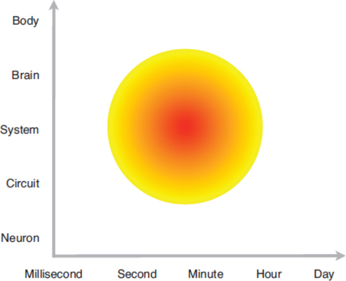
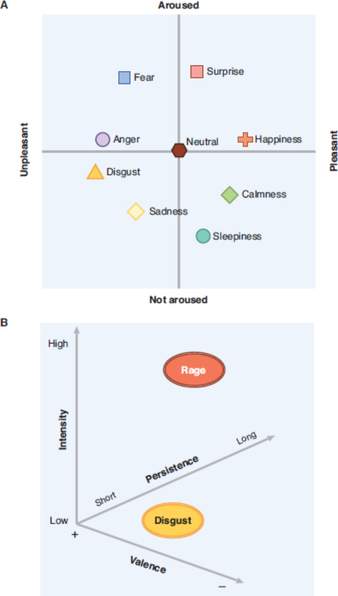
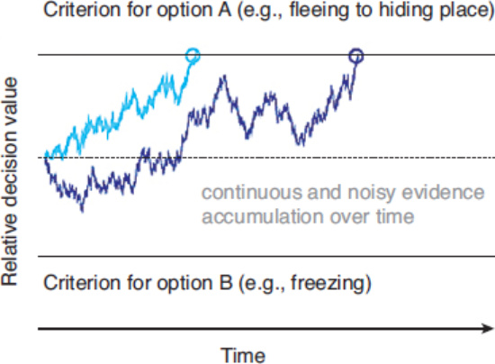
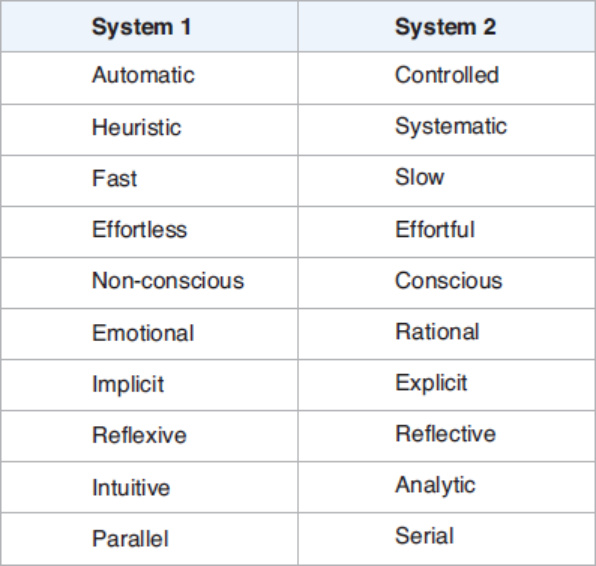
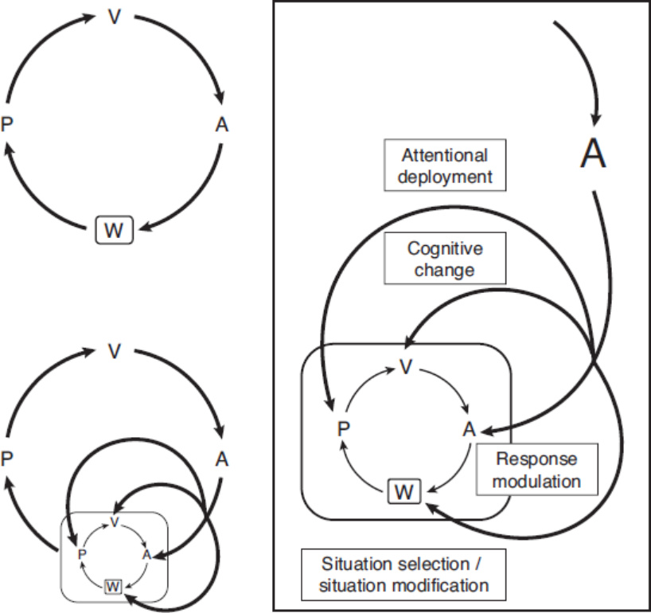

Chương 3 — Khối Xây Dựng Và Đặc Tính Của Cảm Xúc
Các cảm xúc thường được xem là các trạng thái của một con người. Chẳng hạn, chúng ta nói rằng ai đó đang ở trong trạng thái sợ hãi khi họ bị một con gấu đuổi bắt. Nhưng chúng ta cũng áp dụng cảm xúc cho những hệ thống lớn hơn một con người. Ví dụ, chúng ta có thể nói rằng "Nước Mỹ đã ở trong trạng thái sợ hãi" sau các cuộc tấn công khủng bố ngày 11/9. Trong trường hợp này, chúng ta có thể đang nói đến tất cả hoặc hầu hết người dân ở Mỹ, hoặc đến nước Mỹ như một thực thể trừu tượng hơn xét theo cách quốc gia này phản ứng trên mặt báo chí, chính sách, v.v. Việc gán một trạng thái sợ hãi cho một cá nhân, hoặc cho một thực thể xã hội lớn hơn, đều có thể hợp lệ, miễn là ta áp dụng góc nhìn chức năng mà chúng ta đã thảo luận ở chương trước. Trong cả hai ví dụ, đều có một tình huống đe dọa và nhiều hệ quả chức năng của một trạng thái cảm xúc, cùng nhau nỗ lực đối phó với mối đe dọa đó.
Với tư cách là các nhà thần kinh học, chúng tôi quan tâm chủ yếu đến cách kiến trúc chức năng của một cảm xúc thực sự được hiện thực hóa trong hệ thần kinh của một cá nhân, và ngược lại, những cơ chế thần kinh có thể cung cấp cho chúng ta những gợi ý gì về kiến trúc chức năng đó. Chắc chắn chúng tôi mong đợi rằng các cuộc điều tra thần kinh học có thể làm sáng tỏ những "trạng thái sợ hãi" áp dụng cho các nhóm người, cũng như các ngành như thần kinh học quyết định đã giúp làm sáng tỏ hành vi tập thể trong các thị trường kinh tế. Vì thế, dù chủ đề của cuốn sách chúng tôi là bộ não, chúng tôi mong đợi chủ đề này có liên quan đến việc hiểu hành vi không chỉ của các sinh vật đơn lẻ mà còn của các nhóm và xã hội được tạo thành từ những sinh vật tương tác với nhau.
Vậy thì, ranh giới của một trạng thái cảm xúc bên trong một con người hay con vật là gì? Người ta có thể cho rằng một trạng thái cảm xúc bao gồm mọi thứ trong hệ thần kinh (và có thể cả trong cơ thể) đang xảy ra khi bạn ở trong trạng thái cảm xúc đó. Chúng tôi tin rằng cách nhìn này quá rộng. Không phải mọi sự kiện trong não bạn đồng thời xảy ra với một trạng thái sợ hãi đều là một phần của trạng thái sợ hãi; chỉ một tập con là như vậy (hình 3.1). Điều tương tự cũng đúng với bất kỳ trạng thái nào khác mà các nhà tâm lý học hay nhà thần kinh học nghiên cứu, như thị giác hay trí nhớ hay
trải nghiệm có ý thức. Một kích thích thị giác sẽ có những hiệu ứng nhân quả lan tỏa khắp não và cơ thể tôi, nhưng chỉ một tập con trong số những hiệu ứng đó là bản thân quá trình xử lý thị giác. Vì thế, khi nghiên cứu cảm xúc chúng ta cần tách ra một tập con các sự kiện não trung ương: đó là những sự kiện giải thích cách các kích thích phụ thuộc vào ngữ cảnh dẫn đến các hành vi thuộc về cảm xúc theo một mô tả chức năng. Chúng ta chưa biết chính xác điều đó xảy ra ở đâu trong não, nhưng chúng ta biết nó không xảy ra ở mọi nơi, và hiện chúng ta đã có nhiều dữ liệu cho biết nên tìm ở đâu (đó là chủ đề của các chương sắp tới).

Hình 3.1: Phạm vi không gian–thời gian của một trạng thái cảm xúc. Trong cuốn sách này, chúng tôi xem các trạng thái cảm xúc được hiện thực hóa trong một tập con của hệ thần kinh (ít hơn toàn bộ bộ não, nhưng nhiều hơn một nơ-ron hay một mạch thần kinh), và trong những sự kiện diễn ra trong khoảng vài giây đến vài phút.
Như đã thảo luận ở chương trước, quan điểm của chúng tôi là các cảm xúc tiến hóa để đối phó với những thách thức môi trường lặp đi lặp lại, đòi hỏi những yêu cầu tính toán đặc thù, và có thể được phân loại là cần những đặc tính chức năng cụ thể nhằm tạo ra một phản ứng hiệu quả, thích nghi. Chẳng hạn, các loại mối đe dọa cụ thể đều đòi hỏi triển khai nhanh chóng một chuỗi phản ứng phối hợp để tránh nguy hiểm, như sơ đồ chi tiết chúng tôi đã trình bày trong hộp 2.3 và ví dụ về
thí nghiệm sinh học mà chúng ta đã thấy trong hình 2.5 ở chương trước. Các phản ứng cụ thể cần thiết có thể còn phụ thuộc vào loại hay độ gần của mối đe dọa. Đang hình thành một bức tranh về các hệ thần kinh phần nào tách biệt để đáp trả mối đe dọa liên quan đến kẻ săn mồi, một cá thể đồng loài, hay một dạng nguy hiểm môi trường khác (thời tiết xấu, ngã từ vách đá, và tương tự [Gross và Canteras 2012]). Vì vậy, không phải mọi tình huống mà ta trực giác coi là "mối đe dọa" đều được não xử lý như nhau (xem hộp 8.2 để biết một số trường hợp tách rời thực tế ở những bệnh nhân người hiếm hoi).
Điều này có thể khiến tưởng rằng trạng thái trung ương "sợ hãi" liên quan đến việc xử lý các mối đe dọa sẽ vì thế bị chia tách thành một số rất lớn các vấn đề thích nghi khác nhau. Nhưng thực tế, những vấn đề này lại tụm lại quanh một số lượng nhỏ hơn nhiều các hạng mục hay chiều. Chẳng hạn, mối đe dọa từ kẻ săn mồi có một vài biến số khá rõ ràng đặc trưng cho tình huống. Có mức độ gần kề của mối đe dọa (kẻ săn mồi ở xa và chưa phát hiện ra bạn, hay đang tiến lại gần, hay sắp lao tới), và khả năng đối phó với mối đe dọa (bạn mạnh hơn hay yếu hơn kẻ săn mồi, có chỗ trốn không, có người khác quanh đó có thể giúp bạn không) (xem hộp 2.3). Vì thế, một cách nhìn nhận tình huống này là xem nó như một bài toán ra quyết định trong một không gian tương đối ít chiều, được xác định bởi các giá trị của những biến số này: không gian này bao quát phần lớn các tình huống mà bạn đối mặt với một kẻ săn mồi nguy hiểm.
Tất nhiên, sẽ có thêm những chi tiết riêng lẻ của mỗi tình huống đe dọa cụ thể mà bản thân các cảm xúc không có sẵn một phản ứng (tức là bẩm sinh), thậm chí cũng chẳng có cả một phản ứng đã học được. Đó là lý do các trạng thái cảm xúc phải huy động nhiều quá trình khác để tiếp tục giúp con người hay con vật đối phó với mối đe dọa. Chẳng hạn, con đường chính xác để thoát khỏi kẻ săn mồi có thể đòi hỏi rất nhiều xử lý bổ sung nhằm dự đoán làm sao tôi có thể chạy nhanh hơn kẻ săn mồi, địa hình như thế nào, có chướng ngại vật gì trên đường, tôi nên rẽ trái hay rẽ phải, v.v. Bản thân trạng thái cảm xúc không chịu trách nhiệm về các chi tiết chính xác của hành vi đó trong mọi hoàn cảnh khác nhau. Chúng tôi nhấn mạnh điểm hiển nhiên này để thừa nhận rằng các cảm xúc chỉ là một trong nhiều trạng thái góp phần tạo nên hành vi của một con vật. Cũng như bạn không thể có hành vi chỉ bằng sự chú ý, hay chỉ bằng thị giác, hay chỉ bằng trí nhớ, bạn cũng không thể có hành vi được tạo ra chỉ bằng cảm xúc. Tất cả chúng phải cùng phối hợp.
Chính xác thì cảm xúc ăn khớp như thế nào vào cơ chế vận hành của toàn bộ kho tàng các loại trạng thái và quá trình của một sinh vật là một câu hỏi rất lớn. Trả lời được nó tương đương với việc đưa ra một kiến trúc đầy đủ của tâm trí, và đối với nhà thần kinh học, là một câu chuyện về cách bộ não tạo ra tâm trí. Không cần nói cũng biết, đó không phải là nhiệm vụ của chúng tôi ở đây. Người ta vẫn có thể tiến bộ bằng cách tạm gác những chi tiết này. Chúng ta có thể nghiên cứu cảm xúc mà vẫn thừa nhận rằng nhiều quá trình tạo điều kiện (hay "cho phép") phi cảm xúc cũng cần diễn ra. Trong các thí nghiệm, chúng tôi thường làm điều đó bằng cách giữ các quá trình khác tương đối không đổi, hoặc đo chúng như các biến đồng biến. Cũng như việc nghĩ về một hạch hạnh nhân trong đĩa thí nghiệm là hiện thân của sự sợ hãi, tách rời khỏi phần còn lại của bộ não, là vô lý, thì việc nghĩ rằng toàn bộ quá trình xử lý thị giác, vận động, chú ý và trí nhớ đều là hiện thân của sự sợ hãi cũng vô lý không kém. Các cảm xúc được xử lý bởi những hệ thống não lớn hơn một cấu trúc đơn lẻ (như hạch hạnh nhân), nhưng giới hạn hơn toàn bộ bộ não. Khi chúng ta nói thông thường về ai đó "bị nuốt chửng bởi cơn giận dữ," hay nghĩ rằng hành vi của một con vật bị sợ hãi "chiếm quyền điều khiển," điều đó không có nghĩa là toàn bộ hành vi giờ đây có thể chỉ được giải thích bằng sự sợ hãi. Nó chỉ có nghĩa là nhiều quá trình bổ sung đã được huy động để phục vụ trạng thái sợ hãi.
Tuy nhiên, dường như có một số loại trạng thái tương tác chặt chẽ hơn, thậm chí chồng lấp, với các cảm xúc. Còn các trạng thái như động lực, sự hưng phấn và thúc đẩy thì sao? Có thể hóa ra rằng những trạng thái này nên được hiểu như các chiều của một trạng thái cảm xúc. Quả vậy, nhiều lý thuyết về cảm xúc đưa một hoặc nhiều loại trạng thái khác này vào làm thuộc tính của một cảm xúc: chẳng hạn, nó thúc đẩy hành vi và thay đổi theo mức độ hưng phấn. Nhưng cũng có thể hóa ra rằng động lực và sự thúc đẩy là những cách phân loại hữu ích độc lập cho các trạng thái bên trong khác của một sinh vật, dù chúng có chồng lấp một phần với các trạng thái cảm xúc. Chúng tôi không thấy vấn đề gì thực sự với điều này—người ta có thể chọn phân loại các trạng thái của một sinh vật theo nhiều cách khác nhau, và những cách đó không nhất thiết phải loại trừ lẫn nhau nếu chúng hữu ích về mặt khoa học. Tôi có thể đưa cho bạn một địa chỉ theo số nhà và tên phố trong một thành phố, hoặc tôi có thể đưa cho bạn tọa độ GPS mà điện thoại di động của bạn có thể định vị tới. Những mô tả này chồng lấp lên nhau, nhưng cái này không loại bỏ cái kia, vì cả hai đều có thể hữu ích trong những hoàn cảnh khác nhau. Nếu hóa ra việc nói đến các trạng thái động lực và các trạng thái thúc đẩy là hữu ích trong một số hoàn cảnh nhất định (xem chương 5)—thì cứ như vậy. Cuốn sách này nói về các trạng thái cảm xúc,
và chúng tôi hy vọng rằng khi bạn đọc xong, sẽ rõ ràng hơn cảm xúc khác với các trạng thái khác như thế nào. Trước hết, giờ chúng tôi sẽ liệt kê một số thuộc tính của cảm xúc thực sự làm chúng khác biệt với hầu hết các trạng thái khác.
Các Khối Xây Dựng So Với Các Đặc Tính
Như chúng tôi đã thảo luận, cảm xúc nên được hiểu là các trạng thái chức năng thích nghi ở mức độ phức tạp trung gian giữa các phản xạ và sự cân nhắc hay tính toán có ý chí (dù cả các phản ứng giống phản xạ lẫn sự cân nhắc có ý chí đều có thể được huy động vào một phản ứng cảm xúc). Nghĩa là, một mặt, cảm xúc là những gói thích nghi chức năng đã tiến hóa, được bao bọc chặt chẽ hơn và đặc thù hơn về miền (hộp 3.1) so với sự cân nhắc có ý chí; nhưng mặt khác, cảm xúc lại đa diện và linh hoạt hơn nhiều so với các phản xạ. Các thuộc tính của cảm xúc mà chúng ta sẽ thảo luận phản ánh mức độ kiểm soát hành vi này; chẳng hạn, cảm xúc thể hiện sự bền bỉ và học tập như những dấu hiệu của tính linh hoạt, nhưng lại thể hiện tính tự động và sự kiểm soát ưu tiên đối với hành vi như những dấu hiệu của bản chất không cần suy xét.
Dù không có một ranh giới đen trắng rõ ràng, người ta vẫn có thể phân đại thể các thuộc tính mà các trạng thái cảm xúc thể hiện thành hai loại: cái chúng tôi gọi là các khối xây dựng và các đặc tính. Chúng tôi xem các khối xây dựng là những thuộc tính của một cảm xúc thiết yếu và cơ bản hơn. Mọi trạng thái cảm xúc đều có hầu hết các khối xây dựng, và chúng ta có thể tìm thấy các tiền chất của trạng thái cảm xúc ở những sinh vật đơn giản hơn vốn đã thể hiện nhiều thuộc tính của các khối xây dựng. Mặt khác, các đặc tính là những thuộc tính được phát triển, dẫn xuất và biến đổi hơn của cảm xúc, và không phải cảm xúc nào cũng có chúng. Dùng một phép so sánh về ô tô, bánh xe là một khối xây dựng, còn điều hòa không khí là một đặc tính.
Một ví dụ hay về một khối xây dựng là tính tích cực–tiêu cực. Mọi trạng thái cảm xúc đều liên quan đến việc đánh giá một kích thích là tốt hay xấu, là thứ nên tiến lại gần hay nên tránh né. Trong các cách tiếp cận tâm lý tập trung vào trải nghiệm có ý thức về cảm xúc, tính tích cực–tiêu cực tương ứng với mức độ dễ chịu hay khó chịu của cảm giác cảm xúc. Dù chúng tôi cho rằng còn quá sớm để tự cam kết nêu ra các thuộc tính cần thiết của cảm xúc
ở giai đoạn này, tính tích cực–tiêu cực là một ứng viên tốt cho một thuộc tính mà nếu thiếu thì có lẽ bạn không thể có một trạng thái cảm xúc.
Một ví dụ hay về một đặc tính là giao tiếp xã hội. Đây chắc chắn là một thuộc tính rất nổi bật của các cảm xúc, đặc biệt ở các loài có vú, nhưng có thể nó tiến hóa gần đây hơn, và có thể không hiện diện trong mọi trường hợp. Ngay cả một trạng thái cảm xúc duy nhất cũng có thể đóng một vai trò chức năng trong giao tiếp xã hội trong một số hoàn cảnh, nhưng không phải trong những hoàn cảnh khác. Tôi có thể ở trong trạng thái sợ hãi nếu sắp ngã từ vách đá khi một mình, nhưng tôi cũng có thể đang gửi tín hiệu sợ hãi cho một người khác khi đối diện với một tên trộm hung hăng. Trong khi tính tích cực–tiêu cực là một khối xây dựng luôn là thuộc tính của một trạng thái cảm xúc, thì giao tiếp xã hội là một đặc tính có tính biến đổi hơn, chỉ thấy ở một số loài trong một số dịp.
Hộp 3.1. Tính Đặc Thù Miền.
Tính đặc thù miền đề cập đến quá trình xử lý chỉ hoạt động trên một miền hạn chế của các kích thích, hay thậm chí chỉ trên một loại kích thích rất cụ thể. Chẳng hạn, nhận diện khuôn mặt được cho là tương đối đặc thù miền, bởi có các cơ chế tâm lý và sinh học thần kinh chuyên biệt chỉ hoạt động trên khuôn mặt, chứ không phải trên các kích thích thị giác khác. Tương tự, xử lý ngôn ngữ hoạt động trên những loại đầu vào thính giác cụ thể. Cảm xúc nằm ở đâu trong phổ này? Liệu các hạng mục cảm xúc cụ thể, như sợ hãi, ghê tởm hay buồn bã, có chuyên biệt cho những miền kích thích cụ thể theo cách mà xử lý khuôn mặt và ngôn ngữ dường như có không?
Dù thuật ngữ tính đặc thù miền được dùng theo nhiều cách khác nhau, có lẽ cách dùng rõ ràng nhất bắt nguồn từ một định nghĩa kỹ thuật của một thuật ngữ khác: tính mô-đun. Trong cuốn sách The Modularity of Mind (Tính Mô-Đun Của Tâm Trí), nhà triết học Jerry Fodor lần đầu liệt kê các đặc tính mà ông cho rằng một hệ thống mô-đun cần có (Fodor 1983), không phải tất cả vẫn còn được đồng thuận trong các thảo luận hiện đại về chủ đề này. Tuy nhiên, có một đặc tính dường như là điều kiện tiên quyết (sine qua non) của tính mô-đun, đó là tính đặc thù miền. Ý tưởng đơn giản là mô tả phạm vi các đầu vào mà một hệ thống xử lý thông tin có thể tiếp cận.
Trong trường hợp phản xạ bật gối, phạm vi đầu vào cực kỳ hẹp: phản xạ đó không thể quyết định cử động đầu gối của bạn dựa trên những gì bạn tin về thế giới, dựa trên những gì bạn thấy, nghe, nếm hay ngửi. Nó thậm chí còn không thể lồng ghép thông tin từ xúc giác ở nơi khác trên cơ thể. Nó chỉ nhận đầu vào từ các thụ thể căng trong đầu gối của bạn. Mặt khác, việc cân nhắc có đi ăn tối tối nay hay không có thể đưa bất kỳ đầu vào nào vào xem xét—bạn đói đến mức nào, thực đơn của nhà hàng ra sao, vợ bạn nói gì, và cứ thế mãi không có ranh giới rõ ràng. Vì vậy, phản xạ bật gối có tính mô-đun và đặc thù miền rất cao, còn quyết định đi ăn tối thì không.
Một lần nữa, các cảm xúc nằm ở giữa. Một trạng thái cảm xúc như sợ hãi có thể nhận một số loại đầu vào nhất định, chứ không phải bất kỳ đầu vào nào. Chẳng hạn, vị đắng không phải là đầu vào phù hợp cho sự sợ hãi, mà là đầu vào phù hợp cho sự ghê tởm. Một kích thích thị giác phóng to dần là đầu vào phù hợp cho sự sợ hãi, nhưng không phải cho sự ghê tởm. Có sự linh hoạt hơn nhiều so với các phản xạ, vì có sự học tập—nên bạn có thể thử huấn luyện một con vật, hay một con người, sợ vị đắng bằng cách ghép vị đó với cú sốc điện trong một mô hình điều kiện hóa sợ hãi kiểu Pavlov. Nhưng không phải kích thích nào cũng học được dễ như nhau. Một số loại kích thích dễ học cách sợ hơn nhiều (và thực tế nhiều người sợ chúng mà chẳng cần học): chúng ta dễ sợ rắn và nhện hơn là sợ hoa và tranh. Vì vậy, dường như có ít nhất một mức độ đặc thù miền góp phần xác định các hạng mục cảm xúc.
Có một cách giải thích thay thế cho một số trường hợp tưởng như đặc thù miền. Chẳng hạn, tính đặc thù miền của xử lý khuôn mặt thực ra còn đang được tranh luận (Kanwisher 2000; Tarr và Gauthier 2000). Xử lý khuôn mặt, cũng như xử lý cảm xúc, đủ "trung ương" đến mức rất nhiều loại đầu vào khác nhau có thể tiếp cận nó (khác với trường hợp các phản xạ). Điều này đặt ra thách thức là làm sao giải thích tính đặc thù miền cho những trường hợp trung ương này, vì nó không thể chỉ phát sinh từ đầu vào giác quan bị hạn chế, mà phải nằm ở một số đặc tính của bản thân quá trình xử lý trung ương. Đối với khuôn mặt, người ta đã lập luận rằng phân loại chi tiết và sự thành thạo là những đặc tính xử lý thông tin tạo ra tính đặc thù miền (bởi vì chúng
chủ yếu áp dụng cho cách cần xử lý khuôn mặt). Đối với cảm xúc, một danh sách tương tự các đặc tính có thể đưa ra cách giải thích như vậy (ví dụ, những cái chúng tôi liệt kê trong hình 3.2). Công việc tương lai sẽ cần xem xét một định nghĩa linh hoạt hơn về "tính đặc thù miền," xét đến cách nó có thể hình thành trên các thang thời gian của tiến hóa, của phát triển, hay thậm chí của kinh nghiệm với các miền kích thích đòi hỏi xử lý cụ thể trong suốt cuộc đời một người (Spunt và Adolphs 2017b).
Danh Sách Tạm Thời Các Thuộc Tính Của Cảm Xúc
Giờ chúng ta chuyển sang thảo luận các thuộc tính của cảm xúc. Ý chúng tôi là gì khi nói đến các thuộc tính này? Một cách tiếp cận các thuộc tính của cảm xúc rất thực tế: đó là những đặc tính xử lý mà bạn sẽ tìm kiếm trong bộ não, nếu bạn là một nhà thần kinh học, nhằm phát hiện các trạng thái cảm xúc giả định. Chúng cần thể hiện những thuộc tính nhất định, nếu thiếu thì chúng không đủ tư cách được xem là hiện thực hóa một trạng thái cảm xúc, vì chúng không thể thực hiện được vai trò chức năng của cảm xúc đó.
Hình 3.2 đưa ra một danh sách tạm thời các thuộc tính của cảm xúc, trong đó một số sẽ được chúng tôi thảo luận thêm trong phần còn lại của chương này. Có vài điểm cần lưu ý về hình 3.2. Thứ nhất, nó chắc chắn không nhằm đưa ra bất cứ thứ gì như một "lý thuyết về cảm xúc" hay một định nghĩa về cảm xúc. Nó không tự nhận là một danh sách đầy đủ, và thậm chí có thể một số thuộc tính trong đó cuối cùng nên bị bỏ đi. Thay vào đó, nó nhằm minh họa cách tiếp cận điều tra các trạng thái cảm xúc nói chung mà chúng tôi cho là hữu ích nhất: bắt đầu bằng cách liệt kê các đặc điểm vận hành của các trạng thái cảm xúc, nhờ đó chúng có thể thực hiện các vai trò chức năng của mình. Danh sách trong hình 3.2 mang tính khái quát cho mọi cảm xúc. Nếu người ta đang điều tra một cảm xúc cụ thể, như sợ hãi, ghê tởm hay xấu hổ, thì có thể bắt đầu với một danh sách chi tiết hơn về chức năng của từng cảm xúc đó (chẳng hạn, có lẽ đại loại như những gì chúng tôi đã trình bày trong hình 2.4 trong trường hợp sợ hãi). Chúng tôi ngại đảm nhận công việc sau này trong cuốn sách này vì, như đã nói, chúng tôi cho rằng còn quá sớm để tập trung vào các hạng mục cảm xúc cụ thể (ngoại trừ dưới dạng ví dụ).

Hình 3.2: Các thuộc tính của trạng thái cảm xúc. Bảng quan trọng này liệt kê các thuộc tính của cảm xúc mà chúng tôi sẽ tiếp tục thảo luận trong cuốn sách này. Một số thuộc tính liệt kê gần đầu bảng có thể được hiểu thiên về các khối xây dựng của một trạng thái cảm xúc; những thuộc tính liệt kê gần cuối bảng có thể được hiểu thiên về các đặc tính (xem văn bản để biết chi tiết).
Cấu Trúc Tương Đồng
Các thuộc tính thể hiện trong hình 3.2 có thể dùng để đặc trưng hóa một trạng thái cảm xúc cụ thể và giúp phân biệt nó với các trạng thái cảm xúc khác, cũng như với hành vi phản xạ. Một số trường hợp của một cảm xúc có tính tích cực–tiêu cực nhiều hay ít hơn những trường hợp khác; một số kéo dài hơn; một số đóng vai trò lớn hơn trong giao tiếp xã hội. Nếu chúng ta xem tất cả những thuộc tính này là các chiều mà một trạng thái cảm xúc có thể thay đổi, chúng xác định một không gian chiều mà trong đó chúng ta có thể định vị các cảm xúc. Một ví dụ đơn giản hóa về cách điều này hoạt động được thể hiện trong hình 3.3.
Khái niệm về một không gian chiều dùng để đặc trưng hóa các trạng thái cảm xúc đưa chúng ta đến một trong những thuộc tính cơ bản nhất của các trạng thái cảm xúc: các trạng thái cảm xúc khác nhau có thể liên quan với nhau ở mức độ tương đồng nhiều hay ít. Theo một nghĩa nào đó, đây là một điều hiển nhiên. Hoàn toàn mọi thứ đều có thể liên quan với mọi thứ khác theo cách này. Như chúng ta sẽ thấy, đây cũng là một cách tiếp cận chính được dùng trong các nghiên cứu sử dụng chụp ảnh não chức năng để điều tra cảm xúc ở người (chương 8). Một câu hỏi then chốt là: thước đo nào, những chiều nào, đang được dùng để thực hiện phép so sánh tương đồng?
Nếu tôi hỏi bạn trong hai cặp số nào thì tương đồng hơn, 2 và 3, hay 2 và 326, bạn sẽ trả lời gì? Gần như chắc chắn bạn sẽ nói 2 và 3 tương đồng hơn, và thước đo trực giác của bạn đơn giản là hiệu số giữa chúng. Bạn có thể biểu diễn chúng bằng đồ thị trong một không gian một chiều, một trục số, và bạn sẽ thấy 2 và 3 gần nhau hơn 2 và 326. Vậy cái đó thì dễ.
Giờ hãy xét một trường hợp khó hơn. Trong các con vật này, cặp nào có vẻ tương đồng hơn với bạn: mèo và chó, hay mèo và đại bàng? Dù một nhà sinh học hiện đại sẽ trả lời câu này bằng cách so sánh trình tự DNA, vì hầu hết mọi người không có máy giải trình tự DNA, họ sẽ dùng kiến thức sinh học chung hoặc trực giác của mình. Bạn có thể sẽ trả lời ngay rằng mèo và chó tương đồng hơn, nhưng nếu dùng trực giác thì có thể khó nói rõ bạn đã làm thế nào. Lý do là không gian tương đồng
mà bạn đang dùng để so sánh các con vật này thường có nhiều chiều hơn. Nó không phải là một trục số duy nhất: kích thước hay cân nặng dường như không đủ làm thước đo để phán xét sự tương đồng. Bạn phải nghĩ đến các thuộc tính khác, như sự hiện diện của lông, khả năng được nuôi làm thú cưng, có bốn chân, đi lại trên mặt đất, v.v., v.v. Vì thế mèo, chó và đại bàng có thể được so sánh trong một không gian tương đồng nhiều chiều hơn, dù chúng ta không chắc các chiều của không gian đó là gì. Dù vậy, chúng ta vẫn có thể so sánh chúng, và một lần nữa biểu diễn đồ họa sẽ cho thấy một hình học giống như những gì chúng ta đã thấy với các con số: mèo và chó gần nhau hơn trong không gian nhiều chiều này so với mèo và đại bàng.

Hình 3.3: Một không gian chiều cho các cảm xúc. (A) Không gian chiều phổ biến nhất được dùng trong tâm lý học, biểu diễn các cảm xúc trong một không gian hai chiều gồm tính tích cực–tiêu cực và sự hưng phấn. Nó thường tạo ra một sắp xếp vòng tròn, từ đó cấu trúc tương đồng của các cảm xúc có thể dễ dàng được nhìn thấy, như nhà tâm lý học James Russell đã lưu ý (Russell 1980). (B) Hình này nhằm thể hiện về mặt khái niệm cách các cảm xúc có thể được đặc trưng mà không cần phân loại chúng thành "giận dữ," "sợ hãi," "ghê tởm," hay bất kỳ hạng mục nào mà ta tình cờ có từ trong tiếng Anh. Thay vào đó, chúng chỉ là các điểm trong một không gian đa chiều (ở đây chúng tôi chỉ thể hiện ba chiều để dễ hình dung). Chẳng hạn, có thể hóa ra rằng tất cả các trường hợp cảm xúc liên quan đến tấn công và phòng vệ đều tụm lại ở một vùng nhất định của không gian đó, chẳng hạn vùng đỏ được gọi là "cơn cuồng nộ." Mặt khác, cũng rất có thể chúng ta tìm thấy các cụm không dễ tương ứng với các từ hiện có trong vốn từ về cảm xúc của mình. Thậm chí có thể chúng không hề tụm thành cụm nào cả. Một không gian chiều có thể chứa đựng tất cả những khả năng này; hoàn toàn khả thi khi nghiên cứu cảm xúc mà không dùng nhãn bằng lời để mô tả cảm xúc mà bạn đang điều tra. Được sao chép với sự cho phép từ Anderson và Adolphs 2014.
Sự Hưng Phấn Và Tính Tích Cực–Tiêu Cực
Các cảm xúc cũng có thể được so sánh với nhau về mặt tương đồng, nhưng, cũng như với mèo, chó và đại bàng, không rõ nên dùng những chiều nào để thực hiện phép so sánh. Thường thì các nhà nghiên cứu cảm xúc đã dùng hai chiều, vì chúng dường như nắm bắt rất tốt trực giác của chúng ta về các quan hệ tương đồng giữa các cảm xúc khác nhau. Hai chiều đó đại loại là sự hưng phấn hay cường độ (cái chúng tôi gọi là "tính co giãn" trong hình 3.2), và tính tích cực–tiêu cực (hay mức độ dễ chịu). Nghĩa là, mọi cảm xúc đều có mức độ hay có thể co giãn, và mọi cảm xúc đều dễ chịu hay khó chịu ở mức độ này hay mức độ khác. Hai chiều tính tích cực–tiêu cực và sự hưng phấn nắm bắt rất tốt các đánh giá của người ta về cảm xúc, nên ở mức tâm lý, và đặc biệt ở mức cách người ta khái niệm hóa trải nghiệm cảm xúc (các cảm giác), có những lý do chính đáng để lượng hóa sự tương đồng giữa các cảm xúc theo cách này. Việc bạn cho người tham gia xem biểu cảm khuôn mặt của cảm xúc, hay chỉ đưa cho họ những từ hay câu chuyện gợi ra các khái niệm cảm xúc, cũng không quá quan trọng—chúng đều có thể được sắp xếp theo sự tương đồng của chúng trong không gian hai chiều này. Các nhà tâm lý học gọi không gian hai chiều đặc trưng cho các khía cạnh trong trải nghiệm cảm xúc của chúng ta (hoặc các khái niệm về nó) là "affect" (ảnh hưởng), và trong hầu hết các lý thuyết, nó tạo thành một dạng lõi mà trên đó mọi cảm giác thuộc về cảm xúc đều có thể được triển khai (Russell 2003).
Tuy nhiên, không gian hai chiều tính tích cực–tiêu cực–hưng phấn này chủ yếu được rút ra từ các đối tượng con người, và chủ yếu từ các phán đoán mà họ đưa ra về cảm xúc. Nó không được rút ra từ các thước đo hành vi hay thần kinh của các trạng thái cảm xúc thực tế, mà chính là những thước đo mà nhà khoa học cảm xúc có thể muốn dùng. Có những cách thay thế để định vị các cảm xúc trong một không gian tương đồng hai chiều sử dụng các loại dữ liệu khác. Chẳng hạn, bạn cũng có thể dựa sơ đồ của mình vào các quan hệ kích thích–phản ứng, thay vì vào các thuộc tính của khái niệm hay trải nghiệm có ý thức của chúng. Một sơ đồ như vậy thực ra đã được nhà thần kinh học Edmund Rolls đề xuất trong cuốn sách The Brain and
Emotion (Rolls 1999). Rolls lập luận rằng các cảm xúc có thể được xem như các trạng thái được gợi ra bởi việc ban phát hay rút lại phần thưởng hoặc trừng phạt. Điều này cũng tạo ra một không gian tương đồng hai chiều, nhưng các trục giờ tương ứng với việc ban phát (hay rút lại) phần thưởng (hay trừng phạt). Dù khá khác với không gian ảnh hưởng tâm lý chuẩn lấy sự hưng phấn và tính tích cực–tiêu cực làm các chiều, đây là một ví dụ khác về cách một trạng thái cảm xúc (hoặc, trong trường hợp này, là ánh xạ kích thích–hành vi mà các trạng thái cảm xúc thực hiện) có thể được biểu diễn trong một không gian tương đối ít chiều. Một cảm xúc cụ thể nhất định có thể được định vị trong một trong hai không gian hai chiều này. Chẳng hạn, sợ hãi sẽ là hưng phấn cao, tính tích cực–tiêu cực âm. Nó cũng là một trạng thái do ban phát trừng phạt gây ra (hoặc do dự đoán trước trừng phạt).
Không một sơ đồ hai chiều nào trong số này nắm bắt được toàn bộ sự biến thiên giữa các cảm xúc, và chúng tôi tin chắc rằng sẽ cần những sơ đồ có số chiều lớn hơn. Chúng ta chưa biết nên có bao nhiêu chiều. Một gợi ý có thể là làm cho các chiều tương đương với một tập con của các thuộc tính cụ thể mà chúng tôi liệt kê trong hình 3.2, sao cho các cảm xúc không chỉ được mô tả bằng tính tích cực–tiêu cực và sự hưng phấn, mà còn bằng mức độ chúng kéo dài theo thời gian (đại loại như một hằng số phân rã), hay mức độ chúng có thể tổng quát hóa qua các kích thích (có thể tương đương với mức độ dựa trên các tác nhân gây ra bẩm sinh hay đã học được). Sẽ cần một chút khéo léo để nghĩ ra nhiều chiều, mỗi chiều cho phép ánh xạ một đại lượng vô hướng; cuối cùng, chúng ta cần có thể gán một con số cho giá trị mà bất kỳ cảm xúc nào nhận trên bất kỳ chiều nào, và việc lượng hóa như vậy hiện có thể khó đối với nhiều thuộc tính chúng tôi liệt kê. Chúng ta sẽ trở lại với các không gian tương đồng ở chương 8, khi thảo luận về cơ sở thần kinh của cảm xúc từ dữ liệu chụp cộng hưởng từ chức năng (fMRI), và chúng ta sẽ trở lại với tính tích cực–tiêu cực ở các chương 9 và 10, vì đây là một đặc tính đặc biệt nổi bật trong trải nghiệm có ý thức về cảm xúc.
Sự Bền Bỉ
Chúng ta vừa thảo luận về tính co giãn và tính tích cực–tiêu cực khi phác thảo cách các cảm xúc có thể được đặc trưng và so sánh trong một không gian tương đồng. Nhưng tính co giãn và tính tích cực–tiêu cực là những thuộc tính quan trọng độc lập của cảm xúc mà chúng ta có thể
đo lường, và cho phép những chức năng cụ thể. Đặc biệt, tính co giãn phân biệt các trạng thái cảm xúc với các phản xạ kích thích–phản ứng đơn giản, vốn có xu hướng là toàn bộ hay không gì cả thay vì có mức độ. Giờ chúng ta chuyển sang thảo luận ngắn gọn các thuộc tính còn lại được liệt kê trong hình 3.2.
Một khía cạnh quan trọng của tính linh hoạt được tạo nên nhờ khả năng tích hợp thông tin theo thời gian và kết hợp nhiều nguồn thông tin. Chức năng tích hợp này đòi hỏi thuộc tính bền bỉ. Nếu một trạng thái cảm xúc kéo dài trong một khoảng thời gian, nó có thể tích lũy thông tin giác quan qua thời gian và từ nhiều nguồn; nó có thể tương tác phong phú với các trạng thái bên trong khác; và nó có thể có ảnh hưởng kéo dài lên hành vi. Đó là điều chúng ta thường quan sát thấy: nếu ai đó đang ở trong trạng thái sợ hãi, họ ở trong trạng thái đó một thời gian, và cách các kích thích ảnh hưởng đến hành vi của họ bị nhuốm màu bởi sự bền bỉ của trạng thái sợ hãi đó. Chúng ta thấy điều tương tự thường xuyên ở động vật: một con chuột đang sợ hãi vừa thoát khỏi kẻ săn mồi có thể nấp trong hang khá lâu trước khi chui ra, thận trọng và dò dẫm. Trạng thái sợ hãi có ảnh hưởng lâu dài đến hành vi. Hơn nữa, các cảm xúc khác nhau dường như có mức độ bền bỉ khác nhau: ngạc nhiên và sợ hãi tương đối ngắn ngủi, còn buồn bã thì có xu hướng kéo dài hơn. Vì thế, sự bền bỉ có thể là một chiều hữu ích định vị các hạng mục cảm xúc khác nhau. Thuộc tính bền bỉ đã được dùng để giúp đặc trưng hóa các trạng thái giống cảm xúc ngay cả ở ruồi (Gibson et al. 2015). Các trạng thái giống cảm xúc kéo dài hàng giờ, hàng ngày hay lâu hơn thường được phân loại là tâm trạng (nhưng cũng có những khác biệt khác giữa tâm trạng và cảm xúc; xem hộp 3.2).
Hộp 3.2. Tâm Trạng.
Dù các trạng thái cảm xúc quả thực có thuộc tính bền bỉ, chúng thường không kéo dài lâu sau khi tình huống đã gây ra chúng được giải quyết. Một khi bạn đã thoát khỏi con gấu, sự sợ hãi của bạn dần giảm xuống (và có thể được thay thế bằng cảm giác nhẹ nhõm). Nhưng cũng có những trạng thái giống cảm xúc kéo dài hơn nhiều.
Tâm trạng giống cảm xúc ở nhiều phương diện, và thường đi kèm với những cảm giác tương tự. Tuy nhiên, chúng kéo dài lâu hơn cảm xúc rất nhiều—từ vài giờ đến nhiều năm. Tâm trạng dường như nổi bật hơn ở con người so với động vật, có thể phản ánh xu hướng của chúng ta
nghĩ về ký ức và lên kế hoạch cho tương lai nhiều hơn động vật. Trong khi cảm xúc có chức năng đối phó với các tình huống cấp tính, hiện tại, thì tâm trạng thường có chức năng đối phó với các sự kiện trong quá khứ hay tương lai—và thực tế có thể được gợi ra bởi các biểu diễn về những sự kiện hoàn toàn tưởng tượng.
Dù tâm trạng và cảm xúc có một số điểm chung, chúng khác biệt đủ để không nên đơn giản xem tâm trạng là những cảm xúc được kéo dài về thời gian. Theo một số lý thuyết về cảm xúc, chúng ta luôn ở trong một trạng thái cảm xúc, chỉ là trạng thái đó lớn dần rồi nhỏ dần khi chúng ta tiếp xúc với các kích thích. Theo quan điểm của chúng tôi, cảm xúc chỉ xảy ra khi gặp phải những thách thức chức năng cụ thể, và bạn nói chung không ở trong trạng thái cảm xúc nếu chỉ ngồi ở nhà ăn sáng (nhưng bạn có thể đang có tâm trạng).
Khác với cảm xúc, tâm trạng thường không có tác nhân gây ra rõ ràng (có thể là một lý do cho sự bền bỉ lâu dài của chúng). Chúng cũng dường như liên quan đến các hiệu ứng lên quá trình nhận thức hơn là lên hành vi. Chúng ta nói chung không bắt đầu bỏ chạy hay thực hiện các hành vi có mục tiêu cụ thể vì một tâm trạng. Nhưng chúng ta bắt đầu nghĩ về những chủ đề khác, và chú ý theo cách khác. Những hiệu ứng của tâm trạng lên các quá trình nhận thức khác như trí nhớ, sự chú ý và ra quyết định là một chủ đề nghiên cứu lớn trong tâm lý học.
Trong các thuộc tính cảm xúc mà chúng tôi liệt kê trong hình 3.2, tâm trạng có chung sự bền bỉ, tính co giãn, tính tích cực–tiêu cực, sự tổng quát hóa và tính tự động. Chúng dường như không đóng nhiều vai trò trong giao tiếp xã hội. Người ta có thể kéo dài thang thời gian từ cảm xúc đến tâm trạng, rồi đến tận các đặc điểm tính cách. Các đặc điểm tính cách giống cảm xúc cũng là một chủ đề nghiên cứu lớn trong tâm lý học. Con người, và ở một mức độ nhất định là động vật, thể hiện ảnh hưởng khuynh hướng, khiến họ dễ bộc lộ một số phản ứng cảm xúc nhất định. Một số người nói chung trở nên vui hơn, buồn hơn hay sợ hơn trước những kích thích khác nhau bằng nhau. Đây là các khía cạnh của sự khác biệt cá nhân ổn định hơn theo thời gian, có thể có thành phần di truyền đáng kể, và là những chủ đề nghiên cứu quan trọng trong tâm lý bệnh học (xem hộp 2.2).
Sự bền bỉ của trạng thái là một thuộc tính rất hữu ích từ góc độ hình thức của việc ra quyết định. Một trong những loại mô hình tính toán có ảnh hưởng nhất, có thể mô tả cách sự tích lũy bằng chứng giác quan dẫn đến một lựa chọn, là các mô hình gọi là khuếch tán-trôi dạt, ban đầu được nhà tâm lý học Roger Ratcliff nghĩ ra (Ratcliff và McKoon 2008). Có nhiều cách diễn đạt các mô hình tích lũy như vậy, thường dựa trên dữ liệu thời gian phản ứng trong tâm lý học, nhưng hình 3.4 cho thấy bản chất của một mô hình khuếch tán-trôi dạt.
Trong hình 3.4, chúng ta thấy rằng một phản ứng có thể chỉ được gợi ra sau một khoảng thời gian. Bạn có thể dễ dàng tự thử: ngồi trong bóng tối ở một con hẻm không an toàn và lắng nghe những tiếng sột soạt nhỏ và tiếng chân quanh mình. Dù môi trường không có gì thay đổi, cũng chỉ là vấn đề thời gian trước khi bạn trở nên sợ hãi đến mức cần trốn đi hay bỏ chạy. Não bạn đang tích lũy thông tin giác quan báo cho nó biết về các mối đe dọa tiềm ẩn. Nếu bằng chứng giác quan lớn, chẳng hạn thấy một con hổ ngay trước mặt, quyết định của bạn nhanh chóng, vì ngưỡng quyết định gần như được vượt qua ngay lập tức. Nếu bằng chứng giác quan nhỏ, như con hẻm tối với những tiếng sột soạt nhỏ, quyết định của bạn chậm, vì cần một lúc để đủ bằng chứng giác quan tích lũy vượt ngưỡng quyết định. Nếu ngưỡng quyết định của bạn thấp (đường ngang màu đen bị các đường cong màu xanh cắt qua), bạn sẽ đưa ra quyết định hành vi sớm hơn, và điều này có thể tương ứng với một người vốn có khuynh hướng dễ lo âu. Nếu ngưỡng thực sự rất thấp, bạn sẽ quyết định rất nhanh, nhưng cũng sẽ có nhiều kết quả dương tính giả hơn—bạn có thể bỏ chạy trước gần như mọi thứ, vì bạn dễ sợ đến thế (xem hộp 2.2).
Loại mô hình này đã khá mạnh trong việc giải thích cách bộ não đưa ra các quyết định hành vi, vì nó có một vài tham số tự do (có thể được điều chỉnh từ dữ liệu) mô tả cơ chế của quá trình lựa chọn. Ngưỡng cao đến mức nào, điểm khởi đầu ở đâu, tốc độ tích lũy bằng chứng và việc các ranh giới quyết định là cố định (như trong hình 3.4) hay thu hẹp dần (như khi bạn sẽ đưa ra quyết định sau một thời gian cố định, bất kể lượng bằng chứng giác quan), đều là các khía cạnh của mô hình có thể được xem xét, và sẽ mô tả các khía cạnh của hành vi (bạn chạy trốn nhanh đến mức nào, bạn có bao nhiêu kết quả dương tính giả, bạn trở nên nhạy cảm hơn thế nào với thông tin bổ sung theo thời gian, v.v.).
Những mô hình như vậy cũng đã được dùng để thăm dò các phản ứng của não, và chúng cung cấp một khung mạnh mẽ để đưa đặc tính bền bỉ của cảm xúc vào.

Hình 3.4: Mô hình khuếch tán-trôi dạt. Trong sơ đồ này, một quyết định hành vi (hay thần kinh) được mô hình hóa như sự tích lũy nhiễu của một tín hiệu, hay một tập các tín hiệu, theo thời gian. Trong hình là một ví dụ mà người ta phải đưa ra quyết định hành vi dựa trên đầu vào giác quan, chẳng hạn phát hiện một kẻ săn mồi. Theo thời gian, các tín hiệu giác quan có thể tích lũy để vượt qua một ngưỡng quyết định và dẫn đến một phản ứng. Đường màu xanh nhạt có thể tương ứng với quyết định bỏ chạy nếu bạn đang ở trong một con hẻm tối và nghe tiếng chân tiến lại gần. Đường màu xanh đậm có thể tương ứng với quyết định bỏ chạy bị trì hoãn hơn nếu bạn chỉ đang ở trong con hẻm tối và ngày càng sợ hãi, nhưng không nghe thấy tiếng chân nào tiến lại.
Sự bền bỉ cũng có thể được hiểu đơn giản như một đại lượng vô hướng tương ứng với đại loại một hằng số phân rã. Cũng như bất kỳ nguyên tố phóng xạ nào cũng có thể được nhận diện từ một "dấu vân tay" riêng, chính là tốc độ phân rã phóng xạ của nó, mỗi trạng thái cảm xúc có thể có một hằng số phân rã. Có lẽ chúng ta có thể phân biệt các hạng mục cảm xúc khác nhau, một phần, nhờ các hằng số phân rã thời gian khác nhau của chúng. Trong phân rã phóng xạ thì điều này dễ, vì sự phân rã được mô tả bằng một hàm mũ; bất kể bạn thực hiện phép thử ở thời điểm nào hay với bao nhiêu vật liệu, việc so sánh qua các điểm thời gian sẽ cho phép bạn điều chỉnh một hằng số phân rã duy nhất, là dấu hiệu đặc trưng cho nguyên tố của bạn. Sẽ là một công cụ tuyệt vời nếu chúng ta tìm được thứ tương tự cho các cảm xúc!
Bạn có thể nghĩ rằng sự bền bỉ của cảm xúc sẽ bị làm phức tạp hóa, hay thậm chí bị lẫn lộn, bởi các khía cạnh khác của trí nhớ. Chắc chắn rằng mức độ sợ hãi của tôi sẽ phụ thuộc vào việc tôi có nhớ mình đã sợ hãi hay không, hay có nhớ điều gì
đã gây ra sự sợ hãi của tôi ngay từ đầu. Quả thực, đây là những phức tạp cần được tính đến—nhưng chúng cũng có thể được tách bỏ để chứng minh rằng các trạng thái cảm xúc có sự bền bỉ ở con người độc lập với việc chúng ta có nhớ có ý thức điều gì hay không. Một thí nghiệm như vậy đã được các nhà thần kinh học nhận thức Justin Feinstein, Melissa Duff và Daniel Tranel thực hiện, họ kiểm tra các bệnh nhân bị mất trí nhớ (Feinstein, Duff và Tranel 2010). Trong nghiên cứu đó, các bệnh nhân bị tổn thương hải mã, một cấu trúc não cần thiết để mã hóa ký ức mới. Các bệnh nhân không thể nhớ có ý thức bất kỳ sự kiện nào lâu hơn khoảng một phút. Các nhà nghiên cứu cho họ xem những bộ phim gợi ra cảm xúc mạnh, như giận dữ, sợ hãi, hạnh phúc và buồn bã, và tất cả bệnh nhân đều cảm thấy những cảm xúc mạnh khi xem phim, giống như những người khỏe mạnh. Vài phút sau khi xem những bộ phim gợi cảm xúc này, bệnh nhân được hỏi họ cảm thấy thế nào và họ nhớ được gì. Hóa ra là các bệnh nhân mất trí nhớ vẫn cảm thấy cảm xúc mạnh, đặc biệt là buồn bã, trong một thời gian khá lâu sau khi xem phim (như bất kỳ ai cũng vậy)—nhưng trong trường hợp của họ, họ không còn nhớ tại sao. Họ không nhớ là mình đã xem bộ phim và không thể đưa ra lời giải thích nào cho việc họ thấy buồn. Nghiên cứu này chứng minh rằng sự bền bỉ của các trạng thái cảm xúc không đơn giản là hệ quả của khả năng nhớ có ý thức về cảm xúc chúng ta đã cảm nhận, hay nhớ các sự kiện đã gợi ra cảm xúc đó. Các trạng thái cảm xúc có sự bền bỉ nội tại, và sự bền bỉ này có một vai trò chức năng trong khả năng tích hợp các đầu vào giác quan trong một khoảng thời gian nhất định, và ảnh hưởng đến nhận thức và hành vi (cũng như các cảm xúc khác) trong một khoảng thời gian nhất định.
Sự Tổng Quát Hóa
Một khía cạnh rất quan trọng của cảm xúc, và là một khía cạnh khác phân biệt cảm xúc với các phản xạ, là khả năng tổng quát hóa qua các kích thích. Tính tổng quát hóa này là một trong những thuộc tính ít được hiểu rõ nhất, vì nó vượt xa sự phân loại hay trừu tượng hóa như thường được nghiên cứu trong các hệ thống giác quan. Xét đến các đầu vào giác quan cực kỳ đa dạng và đa phương thức có thể mang thông tin liên quan đến một cảm xúc cụ thể (chẳng hạn, các dấu hiệu báo trước một mối đe dọa có thể gây ra trạng thái sợ hãi), không có một công thức
đơn giản nào xác định kích thích nào gây ra một cảm xúc, huống chi là kích thích nào gây ra loại cảm xúc này thay vì loại khác.
Cách phổ biến nhất mà các nhà khoa học đã xử lý sự phức tạp này là đẩy nó vào miền của "các hiệu ứng ngữ cảnh." Nghĩa là, người ta thường giả định rằng vẫn có một tập kích thích tương đối nhỏ có đặc điểm giác quan gây ra cảm xúc, nhưng điều này có thể được điều chỉnh hay kiểm soát bởi ngữ cảnh trong đó các kích thích xuất hiện. Chẳng hạn, sự sợ hãi của bạn đối với một con rắn sẽ phụ thuộc vào việc bạn đang một mình trong bụi rậm, đang ở với những người có thể bảo vệ bạn, hay bạn thấy nó trong một cửa hàng thú cưng sau lớp kính, hoặc chỉ tình cờ biết rằng nó đã bị nhổ răng độc. Như rõ từ những ví dụ này, cái gọi là hiệu ứng ngữ cảnh nhanh chóng trở nên phức tạp đến mức có thể lồng ghép hầu hết nhận thức. Hiện có một lĩnh vực nhỏ lớn mạnh trong thần kinh học cảm xúc dành cho các tương tác giữa cảm xúc và nhận thức, nghiên cứu chính chủ đề này (Pessoa 2013).
Một cách khác để đối diện với sự phức tạp do tổng quát hóa là đặt các kích thích vào trong một mô hình phong phú hơn, lý tưởng nhất là một mô hình có thể được chính thức hóa về mặt chức năng và tính toán. Chẳng hạn, ngữ cảnh mà bạn nhìn thấy con rắn (bụi rậm, ở với người khác, trong cửa hàng thú cưng, v.v.) có thể được ánh xạ vào một sơ đồ như sơ đồ chúng tôi đã trình bày trong hình 2.4.
Sự tổng quát hóa liên quan chặt chẽ với học tập, một chủ đề lớn trong nghiên cứu cảm xúc mà chúng tôi sẽ nhắc lại ở phần sau. Hầu hết các kích thích trong cuộc sống của chúng ta gây ra cảm xúc đều đã đạt được hiệu lực nhân quả của chúng qua kinh nghiệm. Ví dụ được hiểu rõ nhất về sự học tập cảm xúc liên kết như vậy là điều kiện hóa sợ hãi kiểu Pavlov, mà chúng ta sẽ thảo luận chi tiết hơn nhiều ở chương 6.
Cũng có sự tổng quát hóa trong các phản ứng hành vi do một cảm xúc gây ra. Dù các phản ứng không điều kiện kiểu Pavlov như đông cứng hay tiết nước bọt (xem chương 6) có thể tạo thành một tập hành vi tương đối nhỏ, thì các hành vi công cụ đã học tạo thành một tập hành vi mở và lớn, có thể được liên kết linh hoạt với một cảm xúc.
Có những khác biệt quan trọng giữa các loài trong sự tổng quát hóa do học tập. Dù mọi loài động vật đều cho thấy các trường hợp học tập cảm xúc liên kết tương tự như những ví dụ trên, chỉ một số loài dường như cho thấy sự học tập diễn ra qua quan sát thay vì qua kinh nghiệm trực tiếp. Bạn nói chung không cần thực sự tự mình trải qua những thứ nguy hiểm hay ghê tởm để các kích thích gây ra
những cảm xúc đó; bạn có thể học bằng cách nhìn người khác (và nhiều loài động vật cũng vậy). Chẳng hạn, cả hai chúng tôi đều chưa từng bị đe dọa bằng súng, nhưng cả hai đều sợ súng—vì chúng tôi đã thấy quá nhiều ví dụ về người khác bị đe dọa bằng súng (chủ yếu trên phương tiện truyền thông tin tức). Có thể có một loại học tập về các kích thích chỉ riêng ở con người: chỉ cần được kể về chúng. Việc học tập xã hội rộng rãi nhờ quan sát và giao tiếp qua ngôn ngữ có lẽ làm cho cảm xúc của con người tổng quát hóa được nhiều hơn đáng kể so với cảm xúc của các loài động vật khác.
Cùng với sự bền bỉ, sự tổng quát hóa mang lại sự linh hoạt to lớn trong cách các trạng thái cảm xúc liên kết các kích thích với các hành vi. Kiến trúc nhân quả liên kết rất nhiều kích thích, phần lớn thông qua học tập, với rất nhiều hành vi khác nhau (một kiến trúc "quạt vào, quạt ra"). Chẳng hạn, cùng một trạng thái cảm xúc (sợ hãi) có thể được biểu hiện bằng nhiều cử động và tư thế khác nhau (đông cứng, bỏ chạy, kêu lên, biểu cảm khuôn mặt), tùy thuộc vào độ gần của mối đe dọa, ngữ cảnh và kinh nghiệm quá khứ của con vật. Điều này đạt được sự gắn kết chức năng trên một sự đa dạng lớn các tình huống; các trạng thái cảm xúc là những cơ chế di động để đạt được cùng một chức năng (chẳng hạn, đối phó với mối đe dọa, tránh chất độc) trên vô số hoàn cảnh khác nhau mà thế giới có thể thách thức chúng ta.
Điều Phối Toàn Cục
Một thuộc tính khác được liệt kê trong hình 3.2 là sự điều phối toàn cục. Các trạng thái cảm xúc được phân biệt với hầu hết các trạng thái trung ương khác ở mức độ chúng tương tác nhân quả với các trạng thái bên trong khác, kể cả các trạng thái của cơ thể. Các cảm xúc không chỉ ảnh hưởng đến hành vi và nhận thức, mà còn ảnh hưởng rõ rệt đến các phản ứng nội tiết và tự chủ, chẳng hạn làm thay đổi huyết áp, ảnh hưởng đến tiêu hóa và thay đổi mức hormone. Sự huy động toàn cục nhiều biến số của sinh vật có lẽ là một manh mối quan trọng về loại thách thức môi trường mà các cảm xúc đã tiến hóa để đối phó: chúng đòi hỏi một phản ứng phối hợp liên quan đến toàn bộ sinh vật.
Sự bền bỉ, tính tổng quát hóa qua nhiều đầu ra hành vi, và sự huy động toàn cục của sinh vật đều đòi hỏi một thuộc tính then chốt khác của cảm xúc, thường được nhấn mạnh trong các lý thuyết về cảm xúc: sự điều phối. Các hệ quả nhân quả của các trạng thái cảm xúc cần phải gắn kết theo một cách nào đó, và vì thế
chúng phải điều phối các khía cạnh khác nhau của nhận thức và hành vi theo thời gian. Khi chúng ta bắt đầu thảo luận các cơ chế thần kinh trong các chương sau, chủ đề này sẽ trở nên đặc biệt quan trọng, vì sẽ càng rõ rằng các hệ quả nhân quả của một trạng thái cảm xúc trung ương rất đa dạng. Có các hiệu ứng lên cơ thể chúng ta (thay đổi nhịp tim, hô hấp, huyết áp, giãn đồng tử, tiết nước bọt, hormone—tất cả được trung gian qua hệ thần kinh tự chủ) cũng như các thay đổi trong hành vi (chạy, lao tới, nôn mửa, v.v.—tất cả được trung gian qua hệ thần kinh cơ thể). Ngoài những hiệu ứng cơ thể này, tất nhiên còn có hiệu ứng trên nhiều quá trình nhận thức, như chúng tôi đã nhấn mạnh nhiều lần.
Chẳng hạn, một trạng thái sợ hãi thường bao gồm sự hưng phấn trên điện não đồ (sự hưng phấn tổng quát có thể đo từ não bằng điện não đồ), giãn đồng tử, tăng hoạt động của nơ-ron vận động gamma (trương lực cơ), và tăng hô hấp, cùng với nhiều hiệu ứng khác. Tất cả những điều này được gây ra và điều phối như thế nào? Rõ ràng, các cảm xúc cần một sự điều phối và kiểm soát trung ương nào đó để tạo ra những phản ứng hành vi đồng loạt như vậy. Một phần trong số đó được trung gian bởi các chiếu giải phẫu đã biết—chẳng hạn, nhân trung tâm của hạch hạnh nhân chiếu tới các vùng mục tiêu ở thân não và vùng dưới đồi, lần lượt trung gian cho từng thành phần hành vi này thông qua một mạch phức tạp vẫn đang được nghiên cứu chi tiết (hình 2.1).
Bức tranh gợi ý trong hình 2.1, dù đúng ở một mức độ nào đó, có lẽ quá đơn giản để giải thích sự điều phối mà chúng ta thấy, vì một trạng thái cảm xúc sẽ phân tán hơn nhiều so với việc phát ra từ một cấu trúc đơn lẻ như hạch hạnh nhân. Thêm vào đó, những tập con hành vi khác nhau có thể xuất hiện vào những dịp khác nhau, hoặc hình thành vào những thời điểm khác nhau. Vì vậy, rõ ràng câu chuyện đầy đủ về cách điều phối nhiều thành phần được thực hiện sẽ phức tạp và sẽ khác nhau ở một mức độ nhất định đối với các cảm xúc và các loài khác nhau. Dù vậy, đây là một đặc tính toàn cục mà chúng ta có thể tìm kiếm trong não; giống như sự bền bỉ, điều phối nhiều thành phần là một đặc tính chức năng mà chúng ta có thể dùng để tìm kiếm cơ chế thần kinh của một trạng thái cảm xúc trong não; có thể nó liên quan đến các dao động đồng bộ qua các vùng não khác nhau, hay các cơ chế tầm xa khác để liên kết hoạt động ở các vùng khác nhau. Một lần nữa, đây cũng là một đặc tính phân biệt cảm xúc với các phản xạ; cái sau không cần điều phối một số lớn các thành phần, vì chúng không có một số lớn các
thành phần. Nếu đầu gối bạn giật, bạn không cần điều phối huyết áp, nhịp tim, mức hormone hay giãn đồng tử cùng với nó. Bản chất nhiều thành phần của cảm xúc bắt nguồn từ việc chúng là các trạng thái toàn cục của sinh vật (LeDoux 2012); chức năng của chúng liên quan đến toàn bộ một sinh vật trong một môi trường phức tạp, chứ không chỉ là cử động của chân bạn như trong phản xạ bật gối (dù tất nhiên, việc cử động chân có thể là một thành phần của phản ứng cảm xúc, và phản xạ bật gối sẽ giúp hỗ trợ việc bạn bỏ chạy khỏi con gấu).
Có nhiều kiến trúc hệ thống có thể đạt được sự điều phối toàn cục như vậy. Ở một cực đoan, mọi thành phần hành vi có thể hoàn toàn tách biệt, và có thể có một hệ thống liên lạc phân tán hoàn toàn giữa tất cả các thành phần riêng biệt; với một số thành phần thì cái này tạo điều kiện cho cái kia, với số khác thì cái này ức chế cái kia. Với kết nối phù hợp, một mạng phân tán như vậy vẫn có thể đạt được một phản ứng phối hợp.
Ở một cực đoan khác, có thể có một nơ-ron chỉ huy duy nhất điều phối tất cả các thành phần hành vi, theo một hệ phân cấp nghiêm ngặt. Người ta đã tìm thấy ví dụ về cả hai loại cơ chế, và rõ ràng câu trả lời nói chung nằm ở đâu đó ở giữa. Điều gần như tương tự cũng đúng với các cấu trúc như internet: không có một máy chủ duy nhất kiểm soát mọi thứ, cũng không có sự kiểm soát hoàn toàn phân tán. Thay vào đó, có các bộ định tuyến và trung tâm kết nối tổ chức internet ở một mức kiểm soát trung gian giữa kiểm soát phân cấp nghiêm ngặt và kiểm soát phân tán hoàn toàn.
Điều quan trọng là nhấn mạnh lại rằng sự kiểm soát nhân quả do một trạng thái cảm xúc thực hiện được phân bố cả về thời gian lẫn không gian (hình 3.1). Điều này có vẻ hiển nhiên, vì bản thân các hành vi cảm xúc cũng được phân bố theo thời gian. Chúng ta cần có khả năng giải thích cấu trúc thời gian của những hành vi này: một số loại phản ứng giống phản xạ ở tốc độ nhanh và độ sâu xử lý nông (chẳng hạn, ngay lập tức co người lại trước một con gấu đang tấn công), trong khi số khác giống sự cân nhắc ở chỗ liên quan đến nhiều tích hợp chậm và xử lý dự đoán (chẳng hạn, lên kế hoạch cách tránh hay thoát khỏi một con gấu ở cách đó một đoạn trong một môi trường phức tạp với nhiều lối thoát có thể). Dù chúng tôi tập trung vào những khía cạnh của trạng thái cảm xúc nằm ở mức trung gian giữa hai cực đoan này (chẳng hạn, con gấu đang tiến về phía bạn và bạn cần thoát ngay),
các trạng thái cảm xúc thường liên quan đến một phạm vi thời gian rộng của quá trình xử lý cảm giác–vận động, từ rất nhanh đến rất chậm.
Cách các thành phần thần kinh phân tán hiện thực hóa một cảm xúc đạt được sự kiểm soát gắn kết đối với toàn bộ các hệ quả nhân quả của cảm xúc đó vẫn là một bí ẩn lớn. Quả thật, đây là một bí ẩn mà chúng ta cần hiểu nếu muốn thiết kế những robot có cảm xúc. Nó liên quan đến một bài toán khó về phân rã tối ưu: mỗi thành phần đang hiện thực hóa một khía cạnh của cảm xúc, nhưng nhiều thành phần (phân tán cả về không gian lẫn thời gian) lại có các hệ quả nhân quả lên một tập hợp chung các cơ quan hiệu ứng. Sự phân tán của quyền kiểm soát, cùng với thực tế là các thành phần khác nhau nhất thiết phải tương tác với nhau, chính là điều khiến việc phân tích và kiến trúc của toàn bộ hệ thống trở nên phức tạp đến thế để hiểu được.
Cũng như chúng ta đã có các mô hình drift-diffusion (khuếch tán–trôi dạt) như một công cụ toán học có thể dùng để hiểu và mô hình hóa đặc tính bền bỉ của các cảm xúc, cũng có những mô hình toán học mạnh mẽ có thể áp dụng cho dữ liệu sinh học thần kinh nhằm hiểu kiến trúc giải thích cách các trạng thái cảm xúc gây ra các thành phần hành vi được phối hợp. Một loại mô hình được gọi là đồ thị có hướng, đơn giản là một sự chính thức hóa toán học của ảnh hưởng nhân quả: một vùng não (hay một nơ-ron) có thể chiếu tới một vùng não (hay một nơ-ron) khác và gây ra một phản ứng tại đó (hình 3.5). Bạn có thể nghĩ nó như sơ đồ dây điện trong ngôi nhà nơi bạn đang cố tìm hiểu cách các công tắc đèn hoạt động. Hai vùng hay hai nơ-ron đó tương ứng với hai nút trong đồ thị, và ảnh hưởng nhân quả của vùng A lên vùng B được biểu diễn bằng một cạnh có hướng (một mũi tên trong hình).
Nhiều nhà sinh học thần kinh thực nghiệm dựng nên những mô hình như vậy một cách không chính thức, và các nhà tâm lý học nhận thức cũng làm thế, nhưng chúng thường cực kỳ đơn giản. Lĩnh vực khám phá nhân quả có thể dùng dữ liệu thực nghiệm để tạo ra các đồ thị với hàng nghìn, thậm chí hàng triệu, nút (Eberhardt 2017). Thậm chí có những kỹ thuật để đề xuất thí nghiệm tiếp theo bạn nên tiến hành (nút nào bạn nên thao tác thực nghiệm) nhằm giúp xác định kiến trúc duy nhất của đồ thị, ít nhất là trong lý thuyết toán học. Với việc ngày càng có nhiều bộ dữ liệu lớn, và ngày càng có nhiều phương pháp tính toán mạnh mẽ để tìm ra đồ thị đúng, đây có lẽ là một lĩnh vực sẽ đóng góp đáng kể vào hiểu biết của chúng ta về cấu trúc nhân quả của một trạng thái cảm xúc và cách nó đạt được sự kiểm soát và
điều phối đa thành phần. Những hạn chế chính của kiểu phân tích này là có đủ dữ liệu, và có những công cụ đủ đặc hiệu để gây nhiễu loạn tại tiêu điểm.
Tính Tự Động
Chúng ta sẽ khép lại chương này bằng một nhóm đặc tính cuối cùng. Một lần nữa, những đặc tính này lại liên quan đến cách các trạng thái cảm xúc hoạt động ở một mức độ kiểm soát và phức tạp nằm trung gian giữa các phản xạ và những hành động đã được cân nhắc—một sự phân biệt có liên quan đến các khái niệm về tính tự động và sự kiểm soát.
Thuật ngữ tính tự động có một cách dùng chính thức mang tính lịch sử trong tâm lý học, vốn đã rất thành công trong một thời gian dài. Cho đến tận ngày nay, nhận thức của con người vẫn thường được cho là thể hiện các đặc điểm của hai hệ thống khác nhau (dù có tranh luận về việc chúng có thực sự cấu thành các hệ thống thuộc dạng nào đó hay không). Chúng được gọi bằng nhiều tên và thuộc tính khác nhau. Người đoạt giải Nobel Daniel Kahneman gọi chúng là "suy nghĩ nhanh" và "suy nghĩ chậm" trong cuốn sách mang chính tựa đề ấy (Kahneman 2011). Ông cũng gọi chúng, như nhiều nhà kinh tế học vẫn làm, là "Hệ thống 1" và "Hệ thống 2," vốn chỉ là những nhãn dán gộp chung nhiều đặc tính mà người ta cho là của hai hệ thống nhận thức này. Hình 3.6 liệt kê một số đặc tính ấy. Một số nhà nghiên cứu tranh luận liệu tất cả các đặc tính này có thực sự áp dụng được không, và liệu chúng có được gắn kết với nhau theo một cách thú vị nào không—có thể không hề tồn tại một "Hệ thống" tương ứng với hai danh sách được trình bày trong hình. Dù sao đi nữa, một số mục trong Hệ thống 1 thường cùng xuất hiện trong các nghiên cứu: đáng chú ý là cảm xúc và tính tự động.

Hình 3.5: Các mô hình nhân quả. Phía trên: Sơ đồ của một dạng đồ thị rất đơn giản, một đồ thị có hướng có thể được dùng để mô hình hóa cách một kích thích A gây ra một hành vi H thông qua một số giai đoạn trung gian trong não (B–G). Phía dưới: Một ví dụ điển hình hơn từ thần kinh học. Các đường nét biểu thị các hiệu ứng giữa các vùng não khác nhau ở chuột, trung gian cho cách việc xử lý các chất mùi gây ra những hành vi cụ thể. Sơ đồ này dựa trên dữ liệu thực tế và tương đương với một giả thuyết về loại ảnh hưởng nhân quả (chẳng hạn, kích thích hay ức chế). Điều quan trọng cần lưu ý là những mô hình nhân quả như thế này hữu ích ở mọi tầng—từ tầng khái niệm rộng thường thấy trong các mô hình ô-và-mũi tên của tâm lý học, đến tầng hệ thần kinh vĩ mô thường được điều tra bằng tổn thương não ở người hay chụp cộng hưởng từ chức năng (fMRI), rồi đến tầng mạch thần kinh và tế bào có thể được phân tích ở một số mô hình động vật. Chúng dao động từ những giả thuyết mang tính suy đoán cao đến những kết nối nhân quả chi tiết được ủng hộ bởi các kết nối giải phẫu trực tiếp. Được chỉnh sửa với sự cho phép của Anderson 2016.
Bạn sẽ thấy trong danh sách này mục gốc của Shiffrin và Schneider (1977), những người đầu tiên đề xuất sơ đồ hai quá trình; đó là mục "được kiểm soát," được đối chiếu với "tự động." Với các nhà tâm lý học, thuật ngữ này đại thể chỉ những khía cạnh của xử lý mà bạn có thể kiểm soát có ý chí, có ý thức, đối lập với những khía cạnh bạn không thể. Bạn sẽ thấy một số thuộc tính khác của Hệ thống 1 khiến nó trông có vẻ hơi giống các thuộc tính của cảm xúc—thực tế, Hệ thống 1 đôi khi được liên tưởng, thậm chí đồng nhất, với cảm xúc—nhưng danh sách này không dựa trên dữ liệu đặc biệt vững chắc, và theo quan điểm của chúng tôi không nên xem nó quá nghiêm túc theo nghĩa đen.
Một cách mô tả cách các trạng thái cảm xúc thể hiện "tính tự động" là xét đến mức độ ưu tiên của chúng trong kiểm soát hành vi, một đặc tính chúng chia sẻ (nhưng ở mức thấp hơn) với các phản xạ. Nhìn chung, nếu một trạng thái cảm xúc có thể gợi ra một phản ứng hành vi, điều đó thường xảy ra mà không cần thêm bất kỳ nỗ lực nào từ phía bạn. Thực tế, bạn thường phải gắng sức để cảm xúc không gây ra phản ứng hành vi đó. Cần một tầng kiểm soát bổ sung để không đấm người mà bạn đang giận, không bỏ chạy khỏi một con vật đáng sợ, và không bị nghẹn khi đưa một con nhện vào miệng. Vậy nên, rõ ràng có thể có sự cạnh tranh giữa các hệ thống giành quyền kiểm soát hành vi trong những ví dụ này.
Tuy nhiên, sự cạnh tranh dường như giữa một cảm xúc chiếm ưu thế và sự kiểm soát có ý chí tốn công sức không nhất thiết phải phát sinh từ sự cạnh tranh giữa hai hệ thống riêng biệt trong não, như hình 3.6 gợi ý. Trở lại ví dụ về các mô hình khuếch tán–trôi dạt của chúng ta (hình 3.4), có thể nắm bắt sự cạnh tranh dường như đó như đang diễn ra trong một quá trình duy nhất—một quá trình tích lũy tín hiệu từ hai nguồn. Một nguồn có thể tương ứng với tín hiệu "do cảm xúc thúc đẩy," trong khi nguồn kia có thể tương ứng với tín hiệu "kiểm soát có ý chí." Sự chính thức hóa toán học của một mô hình khuếch tán–trôi dạt có thể chứa cả hai như những tín hiệu dẫn dắt
quá trình ra quyết định, chỉ là theo những hướng ngược nhau. Thực tế, cách tiếp cận như vậy đã được áp dụng để mô hình hóa các quyết định của con người được thúc đẩy bởi cả quá trình cảm xúc lẫn quá trình kiểm soát, chẳng hạn như các quyết định vị tha, trong đó mức độ quan trọng ta gán cho cảm giác của mình đối với một người khác có ảnh hưởng đến quyết định cuối cùng là hành xử vị tha hay ích kỷ (Hutcherson, Bushong, và Rangel 2015). Có một mối liên hệ chặt chẽ giữa việc ra quyết định và một số thuộc tính của cảm xúc (đáng chú ý là sự bền bỉ, sự điều phối toàn cục và tính tự động; xem hộp 3.3).

Hình 3.6: Các lý thuyết hai quá trình về nhận thức. Có nhiều sơ đồ như vậy, nhưng chúng có xu hướng trông giống nhau, và có xu hướng xếp cảm xúc vào "Hệ thống 1." Ý tưởng cơ bản là hai hệ thống giành quyền kiểm soát tư duy và hành vi, và mỗi hệ thống có thể phát huy tác động tùy theo hoàn cảnh. Dù đây là một ý tưởng hấp dẫn, bằng chứng cho thấy tất cả những thuộc tính này thực sự đi cùng nhau, hay thuộc về một "hệ thống" nào đó, lại không được ủng hộ vững chắc. Dù sao, cảm xúc và tính tự động có xu hướng cùng xuất hiện trong nhiều nghiên cứu. Có thể nhiều mục trong Hệ thống 1 đã tiến hóa trước những mục trong Hệ thống 2 (Bach và Dayan 2017). Nếu đúng vậy, và nếu Hệ thống 1 tương ứng với hoặc bao gồm các hệ thống cảm xúc, điều đó sẽ ủng hộ ý tưởng rằng các trạng thái cảm xúc có nguồn gốc tiến hóa rất cổ xưa và phổ biến khắp cây phát sinh loài động vật.
Thuộc tính tự động của cảm xúc có liên quan đến những khái niệm cũ hơn trong khoa học nhận thức, vốn xem cảm xúc hoạt động như những cơ chế "ngắt" khi cần ưu tiên hóa các phản ứng đối với một tình huống cụ thể.
Để đưa ra một ví dụ, nhà đoạt giải Nobel Herbert Simon đã viết,
Nếu sinh vật muốn sống sót, một số mục tiêu nhất định phải được hoàn thành vào những thời điểm quy định nhất định … phải dự liệu được một hệ thống ngắt … mọi bằng chứng đều chỉ về mối liên hệ chặt chẽ giữa hoạt động của hệ thống ngắt và phần lớn thứ thường được gọi là hành vi cảm xúc. Hơn nữa, kích thích ngắt có cả một dải hiệu ứng, bao gồm (a) làm gián đoạn các mục tiêu đang diễn ra trong hệ thần kinh trung ương và thay thế bằng những mục tiêu mới, sinh ra, trong số những điều khác, hành vi cảm xúc, (b) hưng phấn hệ thần kinh tự chủ, (c) tạo ra các cảm giác cảm xúc. (Simon 1967)
Điều quan trọng là lưu ý rằng nhiều ví dụ về sự kiểm soát cảm xúc thường liên quan đến người lớn. Ở trẻ em, sự kiểm soát này kém rõ rệt hơn, và có thể không có sự tương ứng rõ ràng ở động vật, nơi cảm xúc thường dường như hoàn toàn chi phối hành vi. Từ góc nhìn này, lập luận rằng cảm xúc là độc nhất ở con người dường như hoàn toàn ngược lại; nếu có gì, thì động vật lại là những sinh vật "cảm xúc" hơn cả con người. Sự cân nhắc có ý thức và sự điều hòa cảm xúc—năng lực kiểm soát có ý chí trải nghiệm và/hoặc biểu hiện của cảm xúc—có thể là tương đối riêng có ở người trưởng thành. Điều hòa cảm xúc là một chủ đề lớn trong tâm lý học và thần kinh học về cảm xúc, một phần vì khó khăn trong điều hòa cảm xúc là một khía cạnh quan trọng của bệnh lý tâm thần (Ochsner và Gross 2005). Một hướng nghiên cứu rất thú vị có thể xem xét những tương đương có thể có của sự điều hòa cảm xúc ở động vật—chẳng hạn như trường hợp một con chó được huấn luyện không bỏ chạy khỏi một kích thích mà nó sợ. Điều này khó đạt được hơn rất, rất nhiều ở động vật không phải người, và kiểu kiểm soát cảm xúc trong những trường hợp này có thể về cơ bản khác với sự kiểm soát có ý chí mang tính siêu nhận thức hơn ở con người. Hộp 3.4 trình bày một sơ đồ để suy nghĩ về sự điều hòa cảm xúc ở người, dựa trên công trình của nhà tâm lý học James Gross.
Tính tự động cũng chiếm ưu thế hơn khi chúng ta lùi lại trong sự phát triển của con người. Người lớn có sự kiểm soát đáng kể, còn trẻ em và trẻ sơ sinh thì không. Phát hiện này cũng đã định hướng cho một khối lượng lớn nghiên cứu thần kinh học, vì chúng ta biết những phần nào của não thay đổi nhiều nhất trong quá trình phát triển.
Một vùng được gọi là vỏ não trước trán, ở vị trí rất trước của não, phát triển muộn nhất—và là một trong những vùng chính thực hiện sự kiểm soát đối với cảm xúc.
Hộp 3.3. Cảm Xúc Và Việc Ra Quyết Định.
Cả các nghiên cứu hành vi lẫn sinh học thần kinh về việc ra quyết định gần đây đều được soi sáng bởi các mô hình toán học mô tả cách sinh vật đáp ứng với các kích thích nhằm đạt được những kết quả thích nghi. Lĩnh vực này, bao gồm kinh tế học thần kinh, thần kinh học quyết định, và rộng hơn là khoa học nhận thức, đưa ra những lập luận giống đến kinh ngạc với những gì chúng tôi đã trình bày cho đến nay trong cuốn sách này.
Lập luận cơ bản diễn ra như sau: thứ nhất, những hành động tối ưu về mặt toán học nhìn chung là không thể để sinh vật đạt được—phép tính cần thiết trở nên quá khó đối với bất kỳ tình huống thực tế nào. Thứ hai, tuy nhiên, có những phỏng đoán kinh nghiệm gần đúng có thể áp dụng cho những kiểu thách thức môi trường đặc biệt, lặp đi lặp lại. Thứ ba, các gói phỏng đoán kinh nghiệm thích nghi này, theo nhiều cách tương tự như các trạng thái cảm xúc, giải quyết các bài toán ra quyết định bằng một số cơ chế, từ những phản ứng Pavlov đơn giản đến các dạng kiểm soát công cụ dựa trên thói quen và dựa trên mục tiêu. Từ góc nhìn của khung ra quyết định tính toán này, các cảm xúc đã được gọi là "các thuật toán kiểm soát để sinh tồn" (Bach và Dayan 2017). Đáng chú ý, khung này đề xuất rằng có những hạng mục cảm xúc cụ thể, phù hợp để đối phó với những thách thức môi trường cụ thể (ví dụ, sợ hãi, ghê tởm, giận dữ, v.v.—liên quan đến khái niệm tính đặc thù miền mà chúng ta đã thảo luận trước đó), và cũng rằng có các tham số liên tục trong những trạng thái này (tương tự như nhiều thuộc tính của cảm xúc mà chúng tôi liệt kê trong hình 3.2).
Ảnh hưởng của các trạng thái cảm xúc đối với việc ra quyết định đã được nghiên cứu trong nhiều bối cảnh. Hầu hết các thí nghiệm gây ra những trạng thái giống tâm trạng hơn—những trạng thái kéo dài tương đối và có tính tích cực–tiêu cực, có thể thiên lệch việc ra quyết định trong một khoảng thời gian. Chẳng hạn, con người thể hiện
những thiên lệch cụ thể trong loại rủi ro mà họ sẵn sàng chấp nhận trong lựa chọn của mình, và những thiên lệch này bị ảnh hưởng bởi tâm trạng của họ. Một số người bi quan hơn, một số lạc quan hơn, và những kỳ vọng thiên lệch về kết quả của các lựa chọn họ đưa ra sẽ dẫn dắt quyết định họ đưa ra (Sharot 2011). Cảm xúc cũng làm thiên lệch việc ra quyết định ở động vật. Giống như con người, nhiều loài có vú cho thấy những thay đổi kéo dài trong kiểu lựa chọn mạo hiểm mà chúng đưa ra, tùy vào việc chúng có gặp phải kích thích gây ra trạng thái tính tích cực–tiêu cực âm hay dương hay không. Thậm chí có báo cáo rằng ong cũng có dạng thiên lệch bi quan trong quyết định của mình (xem chương 7). Trong nghiên cứu đó (Bateson et al. 2011), các nhà nghiên cứu lắc những con ong để gây ra một trạng thái cảm xúc tính tích cực–tiêu cực âm, giống như lo âu. Sau đó họ kiểm tra cách những con ong tiếp cận các lựa chọn mơ hồ và nhận thấy rằng những con ong bị kích động cư xử như thể chúng kỳ vọng khả năng kết quả tiêu cực cao hơn—tương tự như "sự bi quan" ở con người.
Hộp 3.4. Điều Hòa Cảm Xúc.
Điều hòa cảm xúc đề cập đến năng lực có một mức độ kiểm soát có ý chí nhất định đối với trạng thái cảm xúc của bạn, trải nghiệm có ý thức về trạng thái đó, và sự biểu hiện hành vi và tự chủ của trạng thái đó. Như đã được gợi ý bởi phạm vi rộng lớn các hiện tượng mà điều hòa cảm xúc có thể phát huy tác động, sự điều hòa thường được chia nhỏ theo diễn biến thời gian của một cảm xúc. Có thể có sự điều hòa ngay tại thời điểm cảm xúc được khởi phát, chẳng hạn bằng cách chọn những hoàn cảnh và môi trường sẽ điều chỉnh việc một cảm xúc nhất định có được gây ra hay không và bằng cách nào. Chẳng hạn, nếu biết mình sợ nói trước đám đông, tôi có thể tránh những tình huống phải thuyết trình trước công chúng. Đó sẽ là một cách rất gián tiếp, mang tính chiến lược, để điều hòa cảm xúc của mình. Ở mức nội tại hơn, khi đối diện với một tình huống hay kích thích có thể gây ra cảm xúc, chúng ta thường có khả năng diễn giải lại tình huống sao cho ý nghĩa cảm xúc của nó thay đổi. Chúng ta thường làm điều này bằng cách
tìm ra những giải thích thay thế cho các cảm xúc xã hội tiêu cực—chẳng hạn, chúng ta có thể buồn hay thấy tội lỗi vì trượt một kỳ thi, nhưng lại thuyết phục mình rằng mình đã cố gắng hết sức và bài thi chỉ là quá khó. Mức điều hòa cảm xúc này được gọi là "đánh giá lại," vì nó là một sự đánh giá lại một tình huống thường phức tạp dựa trên ý nghĩa của tình huống đó đối với chúng ta và mục tiêu cá nhân của chúng ta—bức tranh về sự khởi phát cảm xúc mà các lý thuyết thẩm định tâm lý đã ủng hộ từ lâu. Chúng ta sẽ nói thêm đôi chút về lý thuyết thẩm định ở chương 10.
Cuối cùng là nỗ lực kiểm soát chính trải nghiệm hay biểu hiện của trạng thái cảm xúc—tức là cố gắng cảm thấy bớt buồn, bớt giận hay bớt sợ. Đây là giai đoạn khó nhất để cố kiểm soát cảm xúc, vì chúng đã đang diễn ra. Thường thì, nếu bạn cố gắng thật nhiều để không cảm thấy giận trong khi thực tế bạn đã giận, bạn chỉ càng giận hơn. Việc cố kìm nén các trải nghiệm và hành vi cảm xúc ở giai đoạn điều hòa này cũng rất mệt. Năng lực điều hòa cảm xúc, ở tất cả những mức khác nhau này, được cho là có sự tham gia nổi bật của vỏ não trước trán, một vùng não ở người chỉ chín muộn tương đối muộn trong tuổi vị thành niên.

Hình 3.7: Điều hòa cảm xúc như một năng lực siêu nhận thức. Có thể hình dung rộng rãi các cảm xúc như minh họa ở góc trên bên trái: chúng liên quan đến một chu kỳ giữa việc nhận biết một tình huống trong thế giới (P), gán cho nó một giá trị (V), rồi thúc đẩy một hành động (A) tác động ngược trở lại thế giới (W) nhằm tối ưu hóa cách một con vật hay một con người tương tác với môi trường của mình. Tuy nhiên, nếu nhìn theo góc rộng hơn, thế giới có thể bao gồm cả chính chúng ta và các phản ứng cảm xúc của chúng ta bên trong nó. Từ góc nhìn rộng hơn đó (góc dưới bên trái), có một chu kỳ khác, lớn hơn, có thể tác động lên chu kỳ nhỏ hơn: chúng ta có thể nhận ra rằng cơn giận của mình đối với cấp trên không mang lại kết quả tốt, có thể gán cho sự thấu thị ấy một giá trị để hành động, và rồi hành động siêu nhận thức có thể điều hòa cơn giận của chúng ta. Ngược lại, sự điều hòa này có thể tập trung vào nhiều quá trình trong chu kỳ (hộp bên phải): nó có thể bao gồm việc chuyển hướng chú ý để thay đổi nhận thức, có thể bao gồm đánh giá lại để thay đổi sự định giá những gì ta nhận biết, có thể kìm nén các hành vi cảm xúc của chúng ta, và có thể lựa chọn một cách chiến lược những tình huống mà ta đặt mình vào để giúp ích cho cảm xúc của mình. Được chỉnh sửa với sự cho phép của Gross 2015.
Một câu hỏi gây bối rối về điều hòa cảm xúc là tại sao nó lại cần thiết ngay từ đầu. Lẽ nào cảm xúc không phải là thích nghi sao? Chúng đã tiến hóa không phải để đối phó với những vấn đề chúng ta đối mặt trong môi trường sao? Phải,
chúng đã vậy—nhưng hãy nhớ rằng chúng ta đã đặt cảm xúc ở vị trí trung gian giữa các phản xạ cứng nhắc và sự linh hoạt hoàn toàn của hành động có ý chí. Ở một mức độ nào đó, cảm xúc có tính đặc thù miền và vì thế không thể xét đến một số loại thông tin có thể liên quan khi được xem xét trong bối cảnh rộng hơn (hộp 3.1). Cảm xúc có thể đáp ứng với một tình huống khuôn mẫu đối mặt với chúng ta, nhưng những cân nhắc rộng hơn và suy nghĩ về hậu quả tương lai có thể gợi ý rằng một hướng hành động khác sẽ tốt hơn. Những cân nhắc rộng như vậy đòi hỏi một mức độ kiểm soát nào đó dựa trên các quá trình thấu thị và nhìn nhận góc độ linh hoạt. Những năng lực này thường được gọi là "siêu nhận thức" để chỉ thực tế là chúng hoạt động trên tầng cao hơn, và có thể ở một mức độ nào đó kiểm soát và điều hòa, các quá trình nhận thức khác, kể cả cảm xúc.
Nhà nghiên cứu cảm xúc James Gross tại Đại học Stanford đã điều tra sự điều hòa cảm xúc với mức độ chi tiết lớn nhất và đã đưa ra một sơ đồ về cách suy nghĩ về tầng kiểm soát siêu nhận thức mà sự điều hòa cảm xúc có thể thể hiện. Hình đối diện minh họa các ý tưởng của ông.
Giao Tiếp Xã Hội
Có một hệ quả rất quan trọng của tính tự động ở các hành vi cảm xúc. Vì chúng khó kiểm soát, chúng có thể đóng vai trò là những tín hiệu xã hội chân thực về một trạng thái cảm xúc. Bạn có thể nhận ra, và các loài động vật khác cũng có thể nhận ra, đôi nét về trạng thái cảm xúc của một con mèo đang rít lên và cong lưng, một con chó đang gầm gừ, hay một người đang khóc. Tất nhiên, chúng ta có thể suy đoán sai về trạng thái cảm xúc theo cách này, và hầu hết các loài động vật khác có lẽ hoàn toàn không suy luận rõ ràng về một trạng thái cảm xúc mà chỉ đơn giản phát hiện các liên tưởng để dự đoán hành vi. Dù sao, ý chính là các hành vi cảm xúc rất dễ được tận dụng cho giao tiếp xã hội. Vì hành vi rít lên ban đầu báo hiệu khả năng cao bị tấn công nếu lại gần, con mèo đã tiến hóa hành vi rít lên cũng để cảnh báo các loài động vật khác tránh xa, như một tín hiệu giao tiếp xã hội mang tính dự đoán.
Trong một ngữ cảnh nhất định, và với kinh nghiệm trước đó, chúng ta có thể suy ra các trạng thái cảm xúc ở động vật từ hành vi cảm xúc của chúng—một dạng giao tiếp xã hội mà chúng ta thực hiện tự động suốt thời gian (hình
3.8). Nhưng chúng ta có đúng về các cảm xúc mà mình suy ra không? Có sự khác biệt giữa cách các loài động vật khác nhận biết các hành vi cảm xúc trong chính loài chúng, cách người bình thường gán cảm xúc cho động vật dựa trên hành vi của chúng, và cách các nhà khoa học gán cảm xúc cho động vật và con người từ hành vi quan sát được. Trong trường hợp đầu tiên, chắc chắn có các cơ chế nhận thức phát hiện những hành vi cụ thể đã tiến hóa thành tín hiệu giao tiếp—động vật chiến đấu, giao phối và chơi đùa một phần vì chúng có thể giao tiếp theo cách đó. Tuy nhiên, chúng không gán cảm xúc cho nhau, vì ngay từ đầu chúng không có khái niệm về cảm xúc.
Trong trường hợp thứ hai, có một số đồng thuận về cách người bình thường diễn giải các hành vi cảm xúc của động vật, nhưng rất ít bằng chứng cho rằng họ nhìn chung là đúng. Với một vài loài, đặc biệt là động vật có vú, có đủ sự tương đồng về hành vi cảm xúc, và đủ kinh nghiệm quan sát chúng, để chúng ta thực sự có thể giao tiếp với những con vật đó qua các hành vi cảm xúc. Những người nuôi thú cưng biết điều này rất rõ. Tuy nhiên, chúng ta gặp khó khăn trong việc ánh xạ các hành vi ta quan sát được vào những từ dùng cho các hạng mục cảm xúc. Chẳng hạn, mèo của chúng ta thực hiện một vài kiểu hành vi khác nhau, tất cả đều liên quan đến một trạng thái cảm xúc tính tích cực–tiêu cực dương: chúng kêu gừ gừ, chúng đạp chân, chúng lăn lưng, và chúng rung đuôi. Tuy nhiên, những hành vi khác nhau này được biểu hiện trong những hoàn cảnh chính xác khác nhau, và thật khó biết nên dán nhãn gì cho cảm xúc đó. Một số hành vi dường như liên quan đến một dạng mong đợi vui vẻ, một số đến sự gắn kết xã hội và ôm ấp, một số đến thức ăn, một số đến trò chơi. Mọi người có thể suy ra khá đáng tin cậy một số thuộc tính cảm xúc thô qua nhiều loài khác nhau. Chẳng hạn, chiều của sự hưng phấn (vốn không riêng gì cảm xúc) dường như được người ta gán từ tiếng kêu của nhiều loài động vật, đa dạng như voi, chim và cá sấu (Filippi et al. 2017).

Hình 3.8: Biểu hiện của cảm xúc ở động vật. Bạn nhận ra được bao nhiêu trong số này? Bảng trên: Có sự đồng thuận khá cao trong việc diễn giải biểu cảm của những loài động vật mà chúng ta đã tương tác nhiều để học được các tín hiệu giao tiếp xã hội của chúng (và để chính chúng học được nên biểu hiện cái nào với chúng ta). Một con chó đang co ro trong một trạng thái tính tích cực–tiêu cực âm, có thể là sợ hãi hay phục tùng, và một con mèo đang rít lên trong một trạng thái tính tích cực–tiêu cực âm, có thể là sợ hãi hay hung hăng. Bảng giữa: Nhiều hành vi khác không thể diễn giải nếu thiếu thêm thông tin ngữ cảnh hoặc huấn luyện về tập tính học (đông cứng vì sợ hãi ở chuột, biểu cảm hú lên mang tính gắn kết ở tinh tinh). Tuy nhiên, tất cả những biểu cảm này đều có thể được định lượng đáng tin cậy bằng nghiên cứu cẩn thận, dù chúng ta cần thận trọng khi gắn tên cho chúng (Parr và Waller 2006). Bảng dưới: các biểu cảm cảm xúc ở động vật không xương sống. Dù thường là những hành vi rất xa lạ, chúng ta vẫn có thể học cách suy ra các hạng mục cảm xúc thô ngay từ hành vi của những con vật này (một con bạch tuộc bỏ chạy vì sợ hãi; một con ruồi đực thể hiện đe dọa bằng cánh trong sự hung hăng nhắm vào một con ruồi đực khác; xem chương 7).
Trường hợp thứ ba, nhà khoa học cố hiểu các hành vi của động vật, tìm cách phân biệt rõ giữa những hành vi này bằng cách đưa vào các mô tả ngữ cảnh phong phú hơn nhiều. Biểu cảm khuôn mặt, tư thế cơ thể, ngữ cảnh, và động thái tổng thể của tình huống và của hành vi đều cần được tính đến. Các nhà tập tính học từ lâu đã cố làm những mô tả chi tiết như vậy về hành vi động vật, và nhìn chung rất thận trọng khi gán cho chúng những nhãn như các từ chúng ta thường dùng cho cảm xúc. Nhiều hành vi phản ánh biểu hiện của các trạng thái cảm xúc, nhưng hiện chúng ta thiếu những nhãn phù hợp, trừ một vài trường hợp thô sơ. Vì thế, chắc chắn là có thể suy ra đôi điều về một trạng thái cảm xúc từ hành vi quan sát được—nhưng chúng ta cần cẩn thận đừng nhân cách hóa vào các hạng mục cảm xúc của con người (các khung chiều có thể tốt hơn về một số mặt), và chúng ta cần diễn giải hành vi trong tình huống và ngữ cảnh mà nó xảy ra, chứ không phải cô lập nó.
Trở nên khó khăn là tách riêng vai trò thích nghi tổ tiên của một hành vi cảm xúc khỏi vai trò của nó như một tín hiệu giao tiếp xã hội, và không nơi nào điều này gây vấn đề hơn là biểu cảm khuôn mặt ở người. Hữu ích là quay lại ví dụ về đồng hồ chúng ta đã thảo luận ở chương 2, khi chúng tôi giới thiệu ý tưởng rằng về căn bản cảm xúc là các trạng thái chức năng. Có những chức năng tổ tiên của cảm xúc, có lẽ được phản ánh rõ nhất ở những sinh vật đơn giản hơn, vốn cho thấy một số khối xây dựng của cảm xúc nhưng chưa có toàn bộ các thuộc tính trong hình 3.2. Theo thời gian, và khi các loài khác nhau chiếm giữ những ổ sinh thái khác nhau, các khối xây dựng bổ sung đã tiến hóa. Bức tranh đơn giản hóa này về sự thay đổi tiến hóa giả định rằng các chức năng cũ được giữ lại và những chức năng mới chỉ đơn giản được thêm vào theo thời gian. Chắc chắn, đó là một điều xảy ra trong tiến hóa.
Nhưng một cơ chế rất quan trọng khác của sự thay đổi tiến hóa là tận dụng một chức năng tổ tiên đã có vào một chức năng mới. Đôi khi điều đó được thực hiện bằng cách chỉ đơn giản thay thế chức năng ban đầu bằng một chức năng mới. Đôi khi nó được thực hiện bằng cách nhân bản chức năng ban đầu, để cả cái tổ tiên và
một cái mới được tận dụng cùng có thể được dùng. Cơ chế này được biết là xảy ra ở tầng gen, chẳng hạn; sự nhân bản gen làm cho một gen được nhân bản có thể đột biến theo hướng một chức năng mới, trong khi gen gốc (vốn có thể là thiết yếu) vẫn có thể thực hiện chức năng ban đầu của nó.
Biểu cảm khuôn mặt có lẽ là sự pha trộn của những khả năng này. Sự kiểm soát thần kinh đối với cơ mặt rất phức tạp, một phần có ý chí và một phần tự động. Chẳng hạn, dễ kiểm soát nửa dưới của khuôn mặt bằng ý chí hơn, nhưng khó kiểm soát nửa trên. Điều này có thể thấy khi người ta giả vờ cười: một nụ cười gọi là Duchenne là nụ cười thật sự, liên quan đến cả cơ mắt lẫn cơ miệng. Trong nụ cười không phải Duchenne, người ta cười bằng nửa dưới của khuôn mặt (miệng), nhưng mắt họ không thực sự khớp và không thể hiện cùng biểu cảm như với một nụ cười thật. Vậy nên, chúng ta có một số kiểm soát có ý chí đối với việc tạo ra nụ cười trên mặt, nhưng cũng có một số kiểm soát tự động, và cái sau được tạo ra bởi một hỗn hợp phức tạp các vùng não chiếu đến cơ mặt của chúng ta (Müri 2015). Với sự kiểm soát thần kinh hỗn hợp và phức tạp đối với khuôn mặt, điều này có thể cũng phản ánh một tập hợp chức năng hỗn hợp và phức tạp mà biểu cảm khuôn mặt phục vụ. Chúng trải dài từ các chức năng tổ tiên liên quan đến những trạng thái cảm xúc cơ bản (ví dụ, lộ răng nếu bạn cần cắn ai đó để tự vệ), đến các chức năng xã hội tương đối tự động và chân thật (ví dụ, lộ răng để báo hiệu rằng ai đó tốt hơn hết nên cẩn thận, nếu không họ có thể bị cắn), đến các chức năng xã hội mang tính chiến lược hay lừa dối ở một số loài (ví dụ, lộ răng nếu bạn là một diễn viên, hay chỉ để dọa ai đó như một trò đùa). Nếu điều bạn đang quan sát chỉ là một biểu cảm khuôn mặt, thì bản thân nó vẫn mơ hồ về việc loại trạng thái nào đã gây ra nó.
Dù có sự mơ hồ cố hữu đó, biểu cảm khuôn mặt ở người đã được dùng làm kích thích cảm xúc phổ biến nhất trong tất cả nghiên cứu tâm lý học về con người, và có lẽ cả trong tất cả nghiên cứu thần kinh học về cảm xúc ở người. Trong các thí nghiệm điển hình, người tham gia được cho xem một biểu cảm khuôn mặt được người thí nghiệm dán nhãn là sợ hãi, và phản ứng bằng lời hay sự phân loại cảm xúc của họ được ghi lại, hoặc phản ứng trong não họ được đo bằng chụp cộng hưởng từ chức năng (fMRI). Không cần nói cũng biết, người ta rất không rõ những phản ứng não như vậy có ý nghĩa gì, ít nhất là khi thiếu rất nhiều thông tin bổ sung. Việc biết cái mà chúng ta gọi bằng lời là "nhận diện cảm xúc" từ biểu cảm khuôn mặt có ý nghĩa gì cũng là một vấn đề. Có thể bạn nghĩ người đó trông có vẻ sợ, nhưng tôi
lại nghĩ cô ấy chỉ đang diễn và thấy tự mãn. Ai đúng? Trong đời thường, một nụ cười có thể có nghĩa là người đó vui vẻ, nhưng thường thì nó có nghĩa là họ lo âu, phục tùng, hoặc một loạt trạng thái khác có liên quan xã hội mà nụ cười được dùng làm tín hiệu, thậm chí thường là một tín hiệu mang tính chiến lược và thao túng (Rychlowska et al. 2017). Có những khác biệt văn hóa về ý nghĩa của các biểu cảm khuôn mặt khác nhau, và những quy tắc xã hội phức tạp về thời điểm nào thì phù hợp để thể hiện những biểu cảm đó. Tùy theo tình huống, mức độ điều hòa này khiến việc liên kết một biểu cảm khuôn mặt ở người với một cảm xúc trở nên phức tạp, một chủ đề gây tranh luận đáng kể trong tâm lý học (hộp 3.5).
Hộp 3.5. Biểu Hiện Và Nhận Diện Biểu Cảm Khuôn Mặt.
Một trong những khía cạnh của cảm xúc được nghiên cứu sâu sát nhất, đặc biệt trong các nghiên cứu tâm lý về cảm xúc con người, là biểu cảm khuôn mặt. Các nghiên cứu tiên phong của Paul Ekman và các cộng sự trong những năm 1960 và 1970 gợi ý rằng một số biểu cảm khuôn mặt được nhận diện là thể hiện cùng một cảm xúc ở mọi nền văn hóa con người (Ekman 1972). Ekman đã đi đến New Guinea và tiến hành các nghiên cứu trong đó người dân bộ lạc được cho xem ảnh về các biểu cảm khuôn mặt, và người ta dò hỏi hạng mục cảm xúc mà họ liên tưởng với những biểu cảm đó. Điều này dẫn đến ý tưởng rằng có biểu cảm của một tập con cảm xúc, gọi là các cảm xúc căn bản, được thể hiện và nhận diện ở mọi nền văn hóa, được giả định là dựa trên các mô-đun não bẩm sinh để biểu hiện chúng. Danh sách các cảm xúc căn bản của Ekman gồm hạnh phúc, ngạc nhiên, sợ hãi, giận dữ, ghê tởm và buồn bã, dù đôi khi khinh miệt cũng được đưa vào và ngạc nhiên đôi khi bị bỏ ra. Có một số ủng hộ cho cái mà Charles Darwin gọi là "những thói quen liên tưởng hữu ích," các chức năng tổ tiên mà biểu cảm khuôn mặt có thể đã phục vụ. Chẳng hạn, đôi mắt mở to và lỗ mũi giãn ra của biểu cảm sợ hãi giúp mở rộng trường thị giác và tối đa hóa việc phát hiện mùi, những chức năng nhận thức đã hỗ trợ phát hiện các mối đe dọa tiềm tàng (Susskind et al. 2008). Tuy nhiên, các nghiên cứu gần đây đã chỉ ra rằng biểu cảm khuôn mặt là những tín hiệu xã hội tinh tế và phức tạp hơn nhiều
so với việc chỉ là những "biểu hiện" của các cảm xúc căn bản (Fernandez-Dols và Russell 2017).
Năng lực nhận diện cảm xúc từ biểu cảm khuôn mặt, cũng như năng lực nhận biết khuôn mặt nói chung một cách bình thường, đòi hỏi kinh nghiệm trong quá trình phát triển. Những trải nghiệm cảm xúc bất thường, chẳng hạn như của những trẻ em bị lạm dụng, dẫn đến năng lực nhận diện cảm xúc từ biểu cảm khuôn mặt bất thường, đặc biệt là giận dữ (Pollack và Kistler 2002). Liên quan đến điều này, các nghiên cứu liên văn hóa ở người cho thấy người từ những nền văn hóa khác nhau có thể phân loại biểu cảm khuôn mặt vào các khái niệm khác nhau, và họ có thể có những từ khác nhau cho các khái niệm đó (Gendron et al. 2014). Nhìn chung, việc đánh giá liệu một biểu cảm khuôn mặt (hay bất kỳ biểu hiện cảm xúc nào khác) có được nhận diện "chính xác," hay thậm chí chỉ là theo sự đồng thuận, phụ thuộc rất nhiều vào nhiệm vụ; chẳng hạn, sự đồng thuận thấp hơn nhiều khi có thể đưa ra câu trả lời tự do so với khi một tập nhỏ nhãn đối chiếu được cung cấp. Trong việc quyết định cường độ nào của biểu cảm khuôn mặt được tính là biểu hiện của một cảm xúc nhất định, não cần thực hiện hoàn thiện mẫu và tách mẫu phức tạp, rồi đặt một ngưỡng tách các trường hợp "đúng" (dương tính thật) khỏi các trường hợp "sai" (âm tính thật). Về cơ bản, đây là một bài toán ra quyết định, có thể được chính thức hóa bằng khung của lý thuyết phát hiện tín hiệu (Lynn và Feldman Barrett 2014). Những người khác nhau, và những nhiệm vụ khác nhau, có thể cho ra các tiêu chuẩn khác nhau về việc đặt ranh giới tách một cảm xúc khỏi cảm xúc khác. Độ chính xác trong việc phát hiện hay phân biệt một cảm xúc từ biểu cảm khuôn mặt phụ thuộc vào thiên lệch và độ nhạy của mỗi người. Chẳng hạn, trong thuật ngữ của lý thuyết phát hiện tín hiệu, độ nhạy cao và thiên lệch thấp sẽ dẫn đến việc phát hiện tất cả các biểu cảm đe dọa có thể có, nhưng cũng phát hiện nhầm sự đe dọa trong những biểu cảm khuôn mặt mà thực tế không có đe dọa (dương tính giả; xem hộp 2.2).
Khuôn mặt người có thể thể hiện các biểu cảm thông qua mười bảy cặp cơ mặt mà chúng ta chia sẻ với các loài vượn lớn (nhưng khỉ có ít hơn), và hoạt động của những cơ này, cũng như đóng góp của chúng vào một biểu cảm cụ thể, có thể được định lượng. Hệ Mã Hóa Ảnh Hưởng Khuôn Mặt (Facial Affect Coding System—FACS) tồn tại cho con người, tinh tinh và khỉ macaque, và cho phép mô tả định lượng các biểu cảm khuôn mặt mà không nhất thiết phải gán cho chúng bất kỳ trạng thái cảm xúc nào (điều mà, như đã
lưu ý trước đó, đặc thù theo văn hóa và ngữ cảnh ở người, và phần lớn là chưa biết ở các loài động vật khác). Cũng có một số định lượng đối với các biểu hiện khác của cảm xúc, chẳng hạn như qua tư thế hay giọng nói (ví dụ, giọng nói có thể được phân tích phổ và nhiều thuộc tính có thể được định lượng về mặt vật lý, mà không cần nhắc đến các hạng mục cảm xúc).
Chính xác thì các cảm xúc được biểu hiện bằng khuôn mặt được biểu diễn như thế nào trong não của người quan sát là một vấn đề phức tạp (Schirmer và Adolphs 2017). Dường như có các biểu diễn cho những hạng mục cảm xúc rời rạc, cho các chiều liên tục, và thậm chí cho các đơn vị hành động riêng lẻ mô tả các cơ trên khuôn mặt. Cũng có các biểu diễn thần kinh về những suy luận xã hội chung chung về trạng thái tâm trí của người khác, và tất cả các loại biểu diễn đa dạng này đều được huy động khi chúng ta nhìn vào một biểu cảm khuôn mặt mang tính cảm xúc. Điều này có nghĩa là não có thể làm rất nhiều việc khác nhau khi nhìn thấy một biểu cảm khuôn mặt, tất cả tùy thuộc vào mục tiêu và nhiệm vụ trước mắt. Năng lực suy luận về trạng thái bên trong của người khác thường được gọi là "thuyết tâm trí" và huy động một mạng lưới các vùng não bao gồm điểm nối thái dương-đỉnh, vỏ não trước trán trung-thất lưng, và hồi đỉnh trung, cùng các vùng vỏ não khác. Hệ thần kinh này, đặc biệt là vỏ não trước trán trung-thất lưng, không chỉ được kích hoạt khi chúng ta gán cảm xúc cho người khác từ việc nhìn khuôn mặt họ, mà còn khi chúng ta nhìn khuôn mặt động vật để suy ra chúng có thể cảm thấy thế nào (xem chương 9).
Dù cảm xúc thường thực sự gây ra những thay đổi trong biểu cảm khuôn mặt, bản thân biểu cảm đó nhìn chung là chưa đủ để xác định cảm xúc cụ thể. Kết luận này tương tự như kết luận chúng ta đã rút ra trong hộp 2.1: cảm xúc cũng không thể được suy ra duy nhất từ các thước đo tâm sinh lý trong cơ thể. Dù vậy, thái độ và hành vi xã hội của chúng ta đối với người khác bị ảnh hưởng mạnh mẽ bởi những phán đoán chúng ta đưa ra về khuôn mặt họ. Hơn nữa, chúng ta thường cảm thấy rất tự tin rằng mình có thể đánh giá một người chỉ bằng nhìn khuôn mặt họ. Chúng ta đã nhầm: những phán đoán của chúng ta về khuôn mặt người khác phản ánh một hỗn hợp phức tạp các thiên lệch tiến hóa và thu được, nói lên nhiều hơn về những định kiến chúng ta có hơn là về người mà chúng ta đang nhìn khuôn mặt (Todorov 2017).
Học Tập
Chúng ta đã lưu ý rằng học tập là một thuộc tính rất quan trọng của cảm xúc khi thảo luận về sự tổng quát hóa. Thực tế, nhiều thuộc tính được liệt kê trong hình 3.2 vừa là bẩm sinh vừa là học được. Cảm xúc liên quan đến các thành phần bẩm sinh chừng nào còn có những quy luật hữu ích mà hệ giác quan có thể phát hiện như đầu vào của một trạng thái cảm xúc. Vị đắng nói chung báo hiệu độc tính, cũng như một số hợp chất hóa học gây mùi hôi, vì thế tất cả những thứ này có thể đóng vai trò là kích thích không điều kiện gây ra ghê tởm (điều này không có nghĩa là bạn sinh ra đã có năng lực gây ghê tởm từ những kích thích đó—vẫn cần có sự phát triển, xem hộp 6.1). Những bóng lớn phủ đến từ phía trên thường báo hiệu có vật gì đó lớn rơi xuống bạn hoặc kẻ săn mồi đang tiến lại từ trên cao, và việc thấy hàm răng há ra báo hiệu bạn sắp bị ăn thịt; những manh mối giác quan này có thể đóng vai trò kích thích không điều kiện gây ra sợ hãi, cũng như những vòng tròn tối dần phía trên là đủ để gây sợ hãi ở chuột (nhớ lại hình 2.5). Nhìn chung, nếu có một bóng lớn dần phía trên và bạn không làm gì, điều tồi tệ sẽ xảy đến với bạn chứ không phải điều tốt. Nhìn chung, nếu một loạt răng đang tiến đến nhanh về phía bạn, bạn sẽ bị cắn hay bị ăn nếu không làm gì. Tiến hóa đã đưa những quy luật thống kê này vào các thành phần giác quan bẩm sinh của một trạng thái cảm xúc, và chúng tương ứng với cái mà trong phòng thí nghiệm chúng ta gọi là "kích thích không điều kiện" đối với một cảm xúc.
Nhưng tất nhiên, phạm vi đầu vào giác quan có thể gây ra một trạng thái cảm xúc không dừng ở đó, vì còn nhiều loại kích thích khác cũng có thể báo hiệu độc tính hay mối đe dọa, và vì thế nên gợi ra ghê tởm hay sợ hãi. Những kích thích đó cần được học biết, và vì thế cảm xúc cũng liên quan đến một lượng học tập đáng kể—một khía cạnh then chốt của sự linh hoạt của cảm xúc. Như chúng tôi đã nhắc trước đó, sự ác cảm vị giác có điều kiện có thể khiến bạn thấy ghê tởm thứ từng có vị ngon lành—đó là bia—nếu tối hôm trước bạn uống quá nhiều đến mức thấy ngán nó. Điều kiện hóa sợ hãi kiểu Pavlov là một ví dụ về học tập liên quan đến sợ hãi: bạn có thể dần sợ đủ thứ bằng cách học biết về chúng. Tuy nhiên, ngay cả ở đây cũng đã có những chuyên biệt hóa sẵn có; dễ học sợ một số kích thích hơn là số khác. Với những cảm xúc khác ngoài sợ hãi, sự học tập có thể còn hẹp hơn. Có lẽ không thể học cách ghê tởm trước một âm thanh, vì đó đơn giản không phải là kiểu kích thích có thể hợp lý mà dự báo được sự ghê tởm cơ bản.
Đó là các khía cạnh của "tính đặc thù miền" của cảm xúc, một thuật ngữ chúng ta đã thảo luận kỹ hơn trong hộp 3.1. Tính đặc thù miền đề cập đến phạm vi chức năng hạn chế của các kích thích hay hoàn cảnh gây ra một trạng thái cảm xúc. Tính đặc thù miền cũng là một đặc điểm then chốt phân biệt cảm xúc với sự cân nhắc có ý chí, vốn dường như không có bất kỳ hạn chế nào như vậy về miền của nó (bạn có thể nghĩ về bất cứ thứ gì, nhưng bạn không thể buồn hay giận về bất cứ thứ gì). Nếu cảm xúc hoàn toàn linh hoạt và chỉ có học tập tham gia, chúng ta có thể điều trị lo âu và trầm cảm ở bệnh nhân chỉ bằng cách cho họ học đúng những điều cần học—đã có những nỗ lực làm điều này ở một mức độ nhất định, nhưng độ khó để đạt được điều đó cho thấy tính linh hoạt và khả năng dẻo của cảm xúc có giới hạn.
Với các thuộc tính cảm xúc mà chúng ta đã thảo luận trong chương này, tiếp theo chúng ta có thể hỏi liệu có tìm thấy bằng chứng về sự hiện diện của chúng trong hành vi hay phản ứng thần kinh của một con vật hay một con người hay không. Tuy nhiên, để liên kết những dữ liệu đó với sự hiểu về một trạng thái cảm xúc, trước hết chúng ta cần quay lại những điểm đã nêu ở đầu chương này: làm sao chúng ta biết thước đo nào thực sự là một phần của cơ chế chịu trách nhiệm nhân quả đối với một cảm xúc, trái ngược với việc chỉ là hệ quả hay tương quan của cảm xúc đó? Làm sao chúng ta biết thước đo não nào trong số các thước đo của mình phản ánh một phần cần thiết hay đủ của cơ chế tạo ra một cảm xúc? Điều này đòi hỏi chúng ta làm rõ logic của các cuộc điều tra thần kinh học, một chủ đề chúng ta sẽ xem xét ở chương sau.
Tóm Tắt
- Chương này dựa trên ý tưởng rằng các trạng thái cảm xúc là các trạng thái được định nghĩa theo chức năng. Để thực hiện chức năng của mình, chúng cần có những đặc điểm xử lý nhất định: cái chúng làm được quyết định bởi cách chúng có thể làm điều đó.
- Chúng tôi đã đưa ra một danh sách sơ bộ các thuộc tính của cảm xúc trong hình 3.2.
- Các cảm xúc có thể được định vị trong một không gian chiều và có thể liên quan với nhau theo sự tương đồng. Một không gian chiều phổ biến để so sánh các cảm xúc là không gian hai chiều gồm sự hưng phấn và tính tích cực–tiêu cực. Tuy nhiên, hiện vẫn chưa rõ liệu "sự hưng phấn" là một thuộc tính thống nhất, hay có những loại hưng phấn khác nhau cho những loại cảm xúc khác nhau (xem chương 5).
- Tính linh hoạt và sự bền bỉ của các trạng thái cảm xúc cho phép tích hợp nhiều nguồn thông tin theo thời gian. Một mô hình thanh thoát đã nắm bắt được sự tích hợp này là mô hình khuếch tán–trôi dạt.
- Sự điều phối là một thuộc tính đòi hỏi một kiến trúc kiểm soát đặc thù. Khía cạnh này có thể được chính thức hóa bằng một mô hình thanh thoát khác: một đồ thị hay mạng toán học. Những ví dụ này làm nổi bật sức mạnh của việc xác định các thuộc tính của cảm xúc vốn rất dễ được nắm bắt trong các mô hình tính toán.
- Cảm xúc thể hiện tính tự động, vốn theo lịch sử được đặt cạnh sự kiểm soát hành vi có ý chí, nỗ lực—một sự phân cực được điển hình hóa trong các lý thuyết hai quá trình cổ điển như "Hệ thống 1" đối lập "Hệ thống 2."
- Khía cạnh giao tiếp xã hội của cảm xúc, một đặc điểm hiện diện khắp nơi trong biểu cảm khuôn mặt, khiến việc phân tích chức năng của chúng trở nên phức tạp hơn đáng kể.
- Cảm xúc liên quan đến cả khía cạnh bẩm sinh lẫn học được.